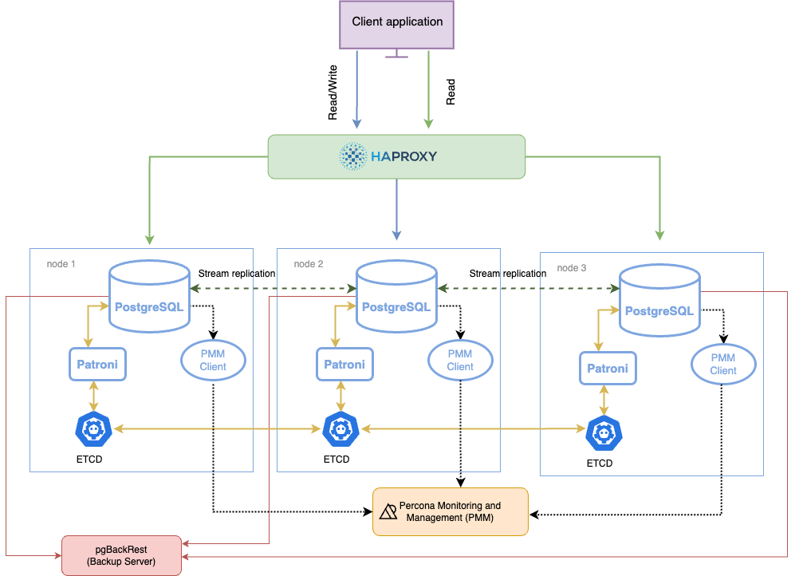
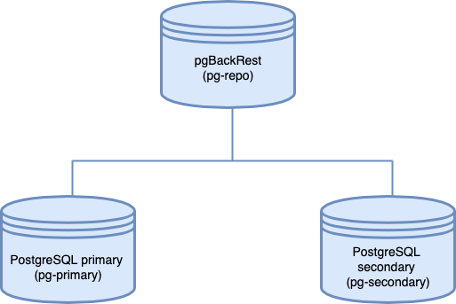

Distribution for PostgreSQL
Documentation
17.4 (March 27, 2025)
Percona Distribution for PostgreSQL 17 Documentation¶
Percona Distribution for PostgreSQL is a suite of open source software, tools and services required to deploy and maintain a reliable production cluster for PostgreSQL.
Percona Distribution for PostgreSQL includes Percona Server for PostgreSQL packaged with extensions from open source community that are certified and tested to work together for high availability, backups, security, and monitoring that help ensure the cluster’s peak performance.
Part of the solution, Percona Operator for PostgreSQL, makes it easy to orchestrate the cluster reliably and repeatably in Kubernetes.
What’s included in Percona Distribution for PostgreSQL?
What’s in it for you?¶
- No vendor lock in - all components of Percona Distribution for PostgreSQL are fully open source
- No guesswork on finding the right version of a component – they all undergo thorough testing to ensure compatibility
- Freely available reference architectures for solutions like high-availability, backups and disaster recovery
- Spatial data handling support via PostGIS
- Monitoring of the database health, performance and infrastructure usage via open source Percona Management and Monitoring with PostgreSQL-specific dashboards
- Run PostgreSQL on Kubernetes using open source Percona Operator for PostgreSQL . It not only automates deployment and management of PostgreSQL clusters on Kubernetes, but also includes enterprise-ready features for high-availability, backup and restore, replication, logging, and more
- Automate PostgreSQL provisioning and management in Kubernetes, in the cloud or on-premises with Percona Everest - the cloud-native database platform
Installation guides¶
Get started quickly with the step-by-step installation instructions.
Solutions¶
Check our solutions to build the database infrastructure that meets the requirements of your organization - be it high-availability, disaster recovery or spatial data handling.
Troubleshooting and FAQ¶
Our comprehensive resources will help you overcome challenges, from everyday issues to specific doubts.
 What’s new?
What’s new?Percona Server for PostgreSQL¶
Percona Server for PostgreSQL is a binary-compatible, open source drop-in replacement for PostgreSQL 17. It introduces additional features to the upstream server, including:
- Storage Manager (SMGR) API Exposure: Allows PostgreSQL extensions to integrate custom storage managers. This change was inspired by the patchset introduced to the community.
- WAL Read/Write API Exposure to hook into WAL read and write functions.
These modifications have no impact on existing use cases and operation of PostgreSQL. They are required to enable additional encryption capabilities such as index-level and Write-Ahead Logging (WAL) encryption of indexes through the pg_tde extension. These encryption features provided by the pg_tde are still under active development and are planned for future releases.
Percona Server and upstream PostgreSQL function identically enabling you to migrate from one to another.
Get help from Percona¶
Our documentation guides are packed with information, but they can’t cover everything you need to know about Percona Distribution for PostgreSQL. They also won’t cover every scenario you might come across. Don’t be afraid to try things out and ask questions when you get stuck.
Percona’s Community Forum¶
Be a part of a space where you can tap into a wealth of knowledge from other database enthusiasts and experts who work with Percona’s software every day. While our service is entirely free, keep in mind that response times can vary depending on the complexity of the question. You are engaging with people who genuinely love solving database challenges.
We recommend visiting our Community Forum. It’s an excellent place for discussions, technical insights, and support around Percona database software. If you’re new and feeling a bit unsure, our FAQ and Guide for New Users ease you in.
If you have thoughts, feedback, or ideas, the community team would like to hear from you at Any ideas on how to make the forum better?. We’re always excited to connect and improve everyone’s experience.
Percona experts¶
Percona experts bring years of experience in tackling tough database performance issues and design challenges.
We understand your challenges when managing complex database environments. That’s why we offer various services to help you simplify your operations and achieve your goals.
| Service | Description |
|---|---|
| 24/7 Expert Support | Our dedicated team of database experts is available 24/7 to assist you with any database issues. We provide flexible support plans tailored to your specific needs. |
| Hands-On Database Management | Our managed services team can take over the day-to-day management of your database infrastructure, freeing up your time to focus on other priorities. |
| Expert Consulting | Our experienced consultants provide guidance on database topics like architecture design, migration planning, performance optimization, and security best practices. |
| Comprehensive Training | Our training programs help your team develop skills to manage databases effectively, offering virtual and in-person courses. |
We’re here to help you every step of the way. Whether you need a quick fix or a long-term partnership, we’re ready to provide our expertise and support.
Get started
Quickstart guide¶
Percona Distribution for PostgreSQL is the Percona server for PostgreSQL with the collection of tools from PostgreSQL community that are tested to work together and serve to assist you in deploying and managing PostgreSQL. Read more.
This document aims to guide database application developers and DevOps engineers in getting started with Percona Distribution for PostgreSQL. Upon completion of this guide, you’ll have Percona Distribution for PostgreSQL installed and operational, and you’ll be able to:
- Connect to PostgreSQL using the
psqlinteractive terminal - Interact with PostgreSQL with basic psql commands
- Manipulate data in PostgreSQL
- Understand the next steps you can take as a database application developer or administrator to expand your knowledge of Percona Distribution for PostgreSQL
Install Percona Distribution for PostgreSQL¶
You can select from multiple easy-to-follow installation options, however we strongly recommend using a Package Manager for a convenient and quick way to try the software first.
Percona provides installation packages in DEB and RPM format for 64-bit Linux distributions. Find the full list of supported platforms and versions on the Percona Software and Platform Lifecycle page .
If you are on Debian or Ubuntu, use apt for installation.
If you are on Red Hat Enterprise Linux or compatible derivatives, use yum.
Get our image from Docker Hub and spin up a cluster on a Docker container for quick evaluation.
Check below to get access to a detailed step-by-step guide.
Percona Operator for Kubernetes is a controller introduced to simplify complex deployments that require meticulous and secure database expertise.
Check below to get access to a detailed step-by-step guide.
If installing the package (the recommended method for a safe, secure, and reliable setup) is not an option, refer to the link below for step-by-step instructions on installing from tarballs using the provided download links.
In this scenario, you must ensure that all dependencies are met. Failure to do so may result in errors or crashes.
Note
This method is not recommended for mission-critical environments.
1. Install
Install Percona Distribution for PostgreSQL on Debian and Ubuntu¶
This document describes how to install Percona Server for PostgreSQL from Percona repositories on DEB-based distributions such as Debian and Ubuntu. Read more about Percona repositories.
Preconditions¶
- Debian and other systems that use the
aptpackage manager include the upstream PostgreSQL server packagepostgresql-17by default. The components of Percona Distribution for PostgreSQL 17 can only be installed together with Percona Server for PostgreSQL (percona-postgresql-17). If you wish to use Percona Distribution for PostgreSQL, uninstall thepostgresql-17package provided by your distribution and then install the chosen components from Percona Distribution for PostgreSQL. -
Install
curlfor Telemetry. We use it to better understand the use of our products and improve them. To installcurl, run the following command:$ sudo apt install curl
Procedure¶
Run all the commands in the following sections as root or using the sudo command:
Configure Percona repository¶
-
Install the
percona-releaserepository management tool to subscribe to Percona repositories:-
Fetch
percona-releasepackages from Percona web:$ wget https://repo.percona.com/apt/percona-release_latest.$(lsb_release -sc)_all.deb -
Install the downloaded package with
dpkg:$ sudo dpkg -i percona-release_latest.$(lsb_release -sc)_all.deb -
Refresh the local cache:
$ sudo apt update
-
-
Enable the repository
Percona provides two repositories for Percona Distribution for PostgreSQL. We recommend enabling the Major release repository to timely receive the latest updates.
$ sudo percona-release setup ppg-17
Install packages¶
The meta package enables you to install several components of the distribution in one go.
$ sudo apt install percona-ppg-server-17
Run the following commands:
-
Install the PostgreSQL server package:
$ sudo apt install percona-postgresql-17 -
Install the components:
Install
pg_repack:$ sudo apt install percona-postgresql-17-repackInstall
pgAudit:$ sudo apt install percona-postgresql-17-pgauditInstall
pgBackRest:$ sudo apt install percona-pgbackrestInstall
Patroni:$ sudo apt install percona-patroniInstall
pgBouncer:$ sudo apt install percona-pgbouncerInstall
pgAudit-set_user:$ sudo apt install percona-pgaudit17-set-userInstall
pgBadger:$ sudo apt install percona-pgbadgerInstall
wal2json:$ sudo apt install percona-postgresql-17-wal2jsonInstall PostgreSQL contrib extensions:
$ sudo apt install percona-postgresql-contribInstall HAProxy
$ sudo apt install percona-haproxyInstall pgpool2
$ sudo apt install percona-pgpool2Install
pg_gather$ sudo apt install percona-pg-gatherInstall
pgvector$ sudo apt install percona-postgresql-17-pgvectorSome extensions require additional setup in order to use them with Percona Distribution for PostgreSQL. For more information, refer to Enabling extensions.
Start the service¶
The installation process automatically initializes and starts the default database. You can check the database status using the following command:
$ sudo systemctl status postgresql.service
Check the Percona Distribution for PostgreSQL version:
$ psql --version
Sample output
psql (PostgreSQL) 17.4.1 (Percona Server for PostgreSQL) 17.4.1
Congratulations! Your Percona Distribution for PostgreSQL is up and running.
Next steps¶
Install Percona Distribution for PostgreSQL on Red Hat Enterprise Linux and derivatives¶
This document describes how to install Percona Distribution for PostgreSQL from Percona repositories on RPM-based distributions such as Red Hat Enterprise Linux and compatible derivatives. Read more about Percona repositories.
Platform specific notes¶
Depending on what operating system you are using, you may need to enable or disable specific modules to install Percona Distribution for PostgreSQL packages and to resolve dependencies conflicts for its specific components.
For Percona Distribution for PostgreSQL packages¶
Install the epel-release package:
$ sudo yum -y install epel-release
$ sudo yum repolist
Disable the postgresql module:
$ sudo dnf module disable postgresql
For percona-postgresql17-devel package¶
You may need to install the percona-postgresql17-devel package when working with some extensions or creating programs that interface with PostgreSQL database. This package requires dependencies that are not part of the Distribution, but can be installed from the specific repositories:
$ sudo yum --enablerepo=codeready-builder-for-rhel-8-rhui-rpms
$ sudo dnf install perl-IPC-Run -y
$ sudo dnf install dnf-plugins-core
$ sudo dnf config-manager --set-enabled powertools
$ sudo dnf config-manager --set-enabled ol8_codeready_builder
$ sudo dnf install perl-IPC-Run -y
$ sudo dnf install dnf-plugins-core
$ sudo dnf config-manager --set-enabled crb
$ sudo dnf install perl-IPC-Run -y
$ sudo dnf config-manager --set-enabled ol9_codeready_builder
$ sudo dnf install perl-IPC-Run -y
For percona-patroni package¶
To install Patroni on Red Hat Enterprise Linux 9 and compatible derivatives, enable the epel repository
$ sudo yum install epel-release
For pgpool2 extension¶
To install pgpool2 on Red Hat Enterprise Linux and compatible derivatives, enable the codeready builder repository first to resolve dependencies conflict for pgpool2.
The following are commands for Red Hat Enterprise Linux 9 and derivatives. For Red Hat Enterprise Linux 8, replace the operating system version in the commands accordingly.
$ sudo dnf config-manager --set-enabled codeready-builder-for-rhel-9-x86_64-rpms
$ sudo dnf config-manager --set-enabled crb
$ sudo dnf config-manager --set-enabled ol9_codeready_builder
For PostGIS¶
For Red Hat Enterprise Linux 8 and derivatives, replace the operating system version in the following commands accordingly.
Run the following commands:
-
Install
epelrepository$ sudo yum install epel-release -
Enable the codeready builder repository to resolve dependencies conflict.
$ sudo dnf config-manager --set-enabled codeready-builder-for-rhel-9-x86_64-rpms
Run the following commands:
-
Install
epelrepository$ sudo yum install epel-release -
Enable the codeready builder repository to resolve dependencies conflict.
$ sudo dnf install dnf-plugins-core $ sudo dnf config-manager --set-enabled crb
Run the following commands:
-
Install
epelrepository$ sudo yum install epel-release -
Enable the codeready builder repository to resolve dependencies conflict.
$ sudo dnf config-manager --set-enabled ol9_codeready_builder
Run the following commands:
-
Configure the Oracle-Linux repository. Create the
/etc/yum.repos.d/oracle-linux-ol9.repofile to install the required dependencies:/etc/yum.repos.d/oracle-linux-ol9.repo[ol9_baseos_latest] name=Oracle Linux 9 BaseOS Latest ($basearch) baseurl=https://yum.oracle.com/repo/OracleLinux/OL9/baseos/latest/$basearch/ gpgkey=file:///etc/pki/rpm-gpg/RPM-GPG-KEY-oracle gpgcheck=1 enabled=1 [ol9_appstream] name=Oracle Linux 9 Application Stream ($basearch) baseurl=https://yum.oracle.com/repo/OracleLinux/OL9/appstream/$basearch/ gpgkey=file:///etc/pki/rpm-gpg/RPM-GPG-KEY-oracle gpgcheck=1 enabled=1 [ol9_codeready_builder] name=Oracle Linux 9 CodeReady Builder ($basearch) - Unsupported baseurl=https://yum.oracle.com/repo/OracleLinux/OL9/codeready/builder/$basearch/ gpgkey=file:///etc/pki/rpm-gpg/RPM-GPG-KEY-oracle gpgcheck=1 enabled=1 -
Download the right GPG key for the Oracle Yum Repository:
$ wget https://yum.oracle.com/RPM-GPG-KEY-oracle-ol9 -O /etc/pki/rpm-gpg/RPM-GPG-KEY-oracle -
Install
epelrepository$ sudo yum install epel-release -
Disable the upstream
postgresqlpackage:$ sudo dnf module disable postgresql
Procedure¶
Run all the commands in the following sections as root or using the sudo command:
Install dependencies¶
Install curl for Telemetry. We use it to better understand the use of our products and improve them.
$ sudo yum -y install curl
Configure the repository¶
-
Install the
percona-releaserepository management tool to subscribe to Percona repositories:$ sudo yum install https://repo.percona.com/yum/percona-release-latest.noarch.rpm -
Enable the repository
Percona provides two repositories for Percona Distribution for PostgreSQL. We recommend enabling the Major release repository to timely receive the latest updates.
$ sudo percona-release setup ppg17
Install packages¶
The meta package enables you to install several components of the distribution in one go.
$ sudo yum install percona-ppg-server17
Run the following commands:
-
Install the PostgreSQL server package:
$ sudo yum install percona-postgresql17-server -
Install the components:
Install
pg_repack:$ sudo yum install percona-pg_repack17Install
pgaudit:$ sudo yum install percona-pgaudit17Install
pgBackRest:$ sudo yum install percona-pgbackrestInstall
Patroni:$ sudo yum install percona-patroniInstall
pgBouncer:$ sudo yum install percona-pgbouncerInstall
pgAudit-set_user:$ sudo yum install percona-pgaudit17_set_userInstall
pgBadger:$ sudo yum install percona-pgbadgerInstall
wal2json:$ sudo yum install percona-wal2json17Install PostgreSQL contrib extensions:
$ sudo yum install percona-postgresql17-contribInstall HAProxy
$ sudo yum install percona-haproxyInstall
pg_gather$ sudo yum install percona-pg_gatherInstall pgpool2
- Check the platform specific notes
-
Install the extension
$ sudo yum install percona-pgpool-II-pg17
Install pgvector package suite:
$ sudo yum install percona-pgvector_17 percona-pgvector_17-debuginfo percona-pgvector_17-debugsource percona-pgvector_17-llvmjitSome extensions require additional setup in order to use them with Percona Distribution for PostgreSQL. For more information, refer to Enabling extensions.
Start the service¶
After the installation, the default database storage is not automatically initialized. To complete the installation and start Percona Distribution for PostgreSQL, initialize the database using the following command:
$ /usr/pgsql-17/bin/postgresql-17-setup initdb
Start the PostgreSQL service:
$ sudo systemctl start postgresql-17
Check the Percona Distribution for PostgreSQL version:
$ psql --version
Sample output
psql (PostgreSQL) 17.4.1 (Percona Server for PostgreSQL) 17.4.1
Congratulations! Your Percona Distribution for PostgreSQL is up and running.
Next steps¶
Install Percona Distribution for PostgreSQL from binary tarballs¶
You can download the tarballs using the links below.
Note
Unlike package managers, a tarball installation does not provide mechanisms to ensure that all dependencies are resolved to the correct library versions. There is no built-in method to verify that required libraries are present or to prevent them from being removed. As a result, unresolved or broken dependencies may lead to errors, crashes, or even data corruption.
For this reason, tarball installations are not recommended for environments where safety, security, reliability, or mission-critical stability are required.
The following tarballs are available for the x86_64 and ARM64 architectures:
- percona-postgresql-17.4-ssl1.1-linux-aarch64.tar.gz - for operating systems on ARM64 architecture that run OpenSSL version 1.x
- percona-postgresql-17.4-ssl1.1-linux-x86_64.tar.gz - for operating systems on x86_64 architecture that run OpenSSL version 1.x
- percona-postgresql-17.4-ssl3-linux-aarch64.tar.gz - for operating systems on ARM64 architecture that run OpenSSL version 3.x
- percona-postgresql-17.4-ssl3-linux-x86_64.tar.gz - for operating systems on x86_64 architecture that run OpenSSL version 3.x
To check what OpenSSL version you have, run the following command:
$ openssl version
Tarball contents¶
The tarballs include the following components:
| Component | Description |
|---|---|
| percona-postgresql17 | The latest version of PostgreSQL server and the following extensions: - pgaudit - pgAudit_set_user - pg_repack - pg_stat_monitor - pg_gather - wal2json - postGIS - the set of contrib extensions |
| percona-haproxy | A high-availability solution and load-balancing solution |
| percona-patroni | A high-availability solution for PostgreSQL |
| percona-pgbackrest | A backup and restore tool |
| percona-pgbadger | PostgreSQL log analyzer with fully detailed reports and graphs |
| percona-pgbouncer | Lightweight connection pooler for PostgreSQL |
| percona-pgpool-II | A middleware between PostgreSQL server and client for high availability, connection pooling and load balancing |
| percona-perl | A Perl module required to create the plperl extension - a procedural language handler for PostgreSQL that allows writing functions in the Perl programming language |
| percona-python3 | A Python3 module required to create plpython extension - a procedural language handler for PostgreSQL that allows writing functions in the Python programming language. Python is also required by Patroni |
| percona-tcl | Tcl development libraries required to create the pltcl extension - a loadable procedural language for the PostgreSQL database system that enables the creation of functions and trigger procedures in the Tcl language |
| percona-etcd | A key-value distributed store that stores the state of the PostgreSQL cluster |
Preconditions¶
- Uninstall the upstream PostgreSQL package.
-
Create the user to own the PostgreSQL process. For example,
mypguser. Run the following command:$ sudo useradd -m mypguserSet the password for the user:
$ sudo passwd mypguser
Create the user to own the PostgreSQL process. For example, mypguser, Run the following command:
$ sudo useradd mypguser -m
Set the password for the user:
$ sudo passwd mypguser
Procedure¶
The steps below install the tarballs for OpenSSL 3.x on x86_64 architecture. Use another tarball if your operating system has OpenSSL version 1.x and / or has the ARM64 architecture.
-
Create the directory where you will store the binaries. For example,
/opt/pgdistro -
Grant access to this directory for the
mypguseruser.$ sudo chown mypguser:mypguser /opt/pgdistro/ -
Fetch the binary tarball.
$ wget https://downloads.percona.com/downloads/postgresql-distribution-17/17.4/binary/tarball/percona-postgresql-17.4-ssl3-linux-x86_64.tar.gz -
Extract the tarball to the directory for binaries that you created on step 1.
$ sudo tar -xvf percona-postgresql-17.4-ssl3-linux-x86_64.tar.gz -C /opt/pgdistro/ -
If you extracted the tarball in a directory other than
/opt, copypercona-python3,percona-tclandpercona-perlto the/optdirectory. This is required for the correct run of libraries that require those modules.$ sudo cp <path_to>/percona-perl <path_to>/percona-python3 <path_to>/percona-tcl /opt/ -
Add the location of the binaries to the PATH variable:
$ export PATH=:/opt/pgdistro/percona-haproxy/sbin/:/opt/pgdistro/percona-patroni/bin/:/opt/pgdistro/percona-pgbackrest/bin/:/opt/pgdistro/percona-pgbadger/:/opt/pgdistro/percona-pgbouncer/bin/:/opt/pgdistro/percona-pgpool-II/bin/:/opt/pgdistro/percona-postgresql17/bin/:/opt/pgdistro/percona-etcd/bin/:/opt/percona-perl/bin/:/opt/percona-tcl/bin/:/opt/percona-python3/bin/:$PATH -
Create the data directory for PostgreSQL server. For example,
/usr/local/pgsql/data. -
Grant access to this directory for the
mypguseruser.$ sudo chown mypguser:mypguser /usr/local/pgsql/data -
Switch to the user that owns the Postgres process. In our example,
mypguser:$ su - mypguser -
Initiate the PostgreSQL data directory:
$ /opt/pgdistro/percona-postgresql17/bin/initdb -D /usr/local/pgsql/dataSample output
Success. You can now start the database server using: /opt/pgdistro/percona-postgresql17/bin/pg_ctl -D /usr/local/pgsql/data -l logfile start -
Start the PostgreSQL server:
$ /opt/pgdistro/percona-postgresql17/bin/pg_ctl -D /usr/local/pgsql/data -l logfile startSample output
waiting for server to start.... done server started -
Connect to
psql$ /opt/pgdistro/percona-postgresql17/bin/psql -d postgresSample output
psql (17.4.1 (Percona Server for PostgreSQL), server 17.4.1 (Percona Server for PostgreSQL)) Type "help" for help. postgres=#
Start the components¶
After you unpacked the tarball and added the location of the components’ binaries to the $PATH variable, the components are available for use. You can invoke a component by running its command-line tool.
For example, to check HAProxy version, type:
$ haproxy version
Some components require additional setup. Check the Enabling extensions page for details.
Run Percona Distribution for PostgreSQL in a Docker container¶
Docker images of Percona Distribution for PostgreSQL are hosted publicly on Docker Hub .
For more information about using Docker, see the Docker Docs .
Make sure that you are using the latest version of Docker . The ones provided via apt and yum may be outdated and cause errors.
By default, Docker pulls the image from Docker Hub if it is not available locally.
Docker image contents
The Docker image of Percona Distribution for PostgreSQL includes the following components:
| Component name | Description |
|---|---|
percona-postgresql17 |
A metapackage that installs the latest version of PostgreSQL |
percona-postgresql17-server |
The PostgreSQL server package. |
percona-postgresql-common |
PostgreSQL database-cluster manager. It provides a structure under which multiple versions of PostgreSQL may be installed and/or multiple clusters maintained at one time. |
percona-postgresql-client-common |
The manager for multiple PostgreSQL client versions. |
percona-postgresql17-contrib |
A collection of additional PostgreSQLcontrib extensions |
percona-postgresql17-libs |
Libraries for use with PostgreSQL. |
percona-pg-stat-monitor17 |
A Query Performance Monitoring tool for PostgreSQL. |
percona-pgaudit17 |
Provides detailed session or object audit logging via the standard PostgreSQL logging facility. |
percona-pgaudit17_set_user |
An additional layer of logging and control when unprivileged users must escalate themselves to superuser or object owner roles in order to perform needed maintenance tasks. |
percona-pg_repack17 |
rebuilds PostgreSQL database objects. |
percona-wal2json17 |
a PostgreSQL logical decoding JSON output plugin. |
percona-pgvector |
A vector similarity search for PostgreSQL |
Start the container¶
-
Start a Percona Distribution for PostgreSQL container as follows:
$ docker run --name container-name -e POSTGRES_PASSWORD=secret -d percona/percona-distribution-postgresql:17.4Where:
container-nameis the name you assign to your containerPOSTGRES_PASSWORDis the superuser password17.4is the tag specifying the version you need. Docker identifies the architecture (x86_64 or ARM64) and pulls the respective image. See the full list of tags .
Tip
You can secure the password by exporting it to the environment file and using that to start the container.
-
Export the password to the environment file:
$ echo "POSTGRES_PASSWORD=secret" > .my-pg.env -
Start the container:
$ docker run --name container-name --env-file ./.my-pg.env -d percona/percona-distribution-postgresql:17.4
-
Connect to the container’s interactive terminal:
$ docker exec -it container-name bashThe
container-nameis the name of the container that you started in the previous step.
Connect to Percona Distribution for PostgreSQL from an application in another Docker container¶
This image exposes the standard PostgreSQL port (5432), so container linking makes the instance available to other containers. Start other containers like this in order to link it to the Percona Distribution for PostgreSQL container:
$ docker run --name app-container-name --network container:container-name -d app-that-uses-postgresql
where:
app-container-nameis the name of the container where your application is running,container nameis the name of your Percona Distribution for PostgreSQL container, andapp-that-uses-postgresqlis the name of your PostgreSQL client.
Connect to Percona Distribution for PostgreSQL from the psql command line client¶
The following command starts another container instance and runs the psql command line client against your original container, allowing you to execute SQL statements against your database:
$ docker run -it --network container:db-container-name --name container-name percona/percona-distribution-postgresql:17.4 psql -h address -U postgres
Where:
db-container-nameis the name of your database containercontainer-nameis the name of your container that you will use to connect to the database container using thepsqlcommand line client17.4is the tag specifying the version you need. Docker identifies the architecture (x86_64 or ARM64) and pulls the respective image.addressis the network address where your database container is running. Use 127.0.0.1, if the database container is running on the local machine/host.
Enable encryption¶
Percona Distribution for PostgreSQL Docker image includes the pg_tde extension to provide data encryption. You must explicitly enable it when you start the container.
Here’s how to do this:
-
Start the container with the
ENABLE_PG_TDE=1environment variable:$ docker run --name container-name -e ENABLE_PG_TDE=1 -e POSTGRES_PASSWORD=sUpers3cRet -d percona/percona-distribution-postgresql:17.4where:
container-nameis the name you assign to your containerENABLE_PG_TDE=1adds thepg_tdeto theshared_preload_librariesand enables the custom storage managerPOSTGRES_PASSWORDis the superuser password
-
Connect to the container and start the interactive
psqlsession:$ docker exec -it container-name psqlSample output
psql (17.4 - Percona Server for PostgreSQL 17.4.1) Type "help" for help. postgres=# -
Create the extension in the database where you want to encrypt data. This requires superuser privileges.
CREATE EXTENSION pg_tde; -
Configure a key provider. In this sample configuration intended for testing and development purpose, we use a local keyring provider.
For production use, set up an external key management store and configure an external key provider. Refer to the Setup chapter in the
pg_tdedocumentation.Warning: This example is for testing purposes only:
SELECT pg_tde_add_key_provider_file('file-keyring','/tmp/pg_tde_test_local_keyring.per'); -
Add a principal key
SELECT pg_tde_set_principal_key('test-db-master-key','file-keyring');The key is autogenerated. You are ready to use data encryption.
-
Create a table with encryption enabled. Pass the
USING tde_heapclause to theCREATE TABLEcommand:CREATE TABLE <table_name> (<field> <datatype>) USING tde_heap;
Enable pg_stat_monitor¶
To enable the pg_stat_monitor extension after launching the container, do the following:
- connect to the server,
- select the desired database and enable the
pg_stat_monitorview for that database:
create extension pg_stat_monitor;
- to ensure that everything is set up correctly, run:
\d pg_stat_monitor;
Output
View "public.pg_stat_monitor"
Column | Type | Collation | Nullable | Default
---------------------+--------------------------+-----------+----------+---------
bucket | integer | | |
bucket_start_time | timestamp with time zone | | |
userid | oid | | |
dbid | oid | | |
queryid | text | | |
query | text | | |
plan_calls | bigint | | |
plan_total_time | numeric | | |
plan_min_timei | numeric | | |
plan_max_time | numeric | | |
plan_mean_time | numeric | | |
plan_stddev_time | numeric | | |
plan_rows | bigint | | |
calls | bigint | | |
total_time | numeric | | |
min_time | numeric | | |
max_time | numeric | | |
mean_time | numeric | | |
stddev_time | numeric | | |
rows | bigint | | |
shared_blks_hit | bigint | | |
shared_blks_read | bigint | | |
shared_blks_dirtied | bigint | | |
shared_blks_written | bigint | | |
local_blks_hit | bigint | | |
local_blks_read | bigint | | |
local_blks_dirtied | bigint | | |
local_blks_written | bigint | | |
temp_blks_read | bigint | | |
temp_blks_written | bigint | | |
blk_read_time | double precision | | |
blk_write_time | double precision | | |
host | bigint | | |
client_ip | inet | | |
resp_calls | text[] | | |
cpu_user_time | double precision | | |
cpu_sys_time | double precision | | |
tables_names | text[] | | |
wait_event | text | | |
wait_event_type | text | | |
Note that the pg_stat_monitor view is available only for the databases where you enabled it. If you create a new database, make sure to create the view for it to see its statistics data.
Enable Percona Distribution for PostgreSQL components¶
Some components require additional configuration before using them with Percona Distribution for PostgreSQL. This sections provides configuration instructions per component.
Patroni¶
Patroni is the high availability solution for PostgreSQL. The High Availability in PostgreSQL with Patroni chapter provides details about the solution overview and architecture deployment.
While setting up a high availability PostgreSQL cluster with Patroni, you will need the following components:
-
Patroni installed on every
postresqlnode. -
Distributed Configuration Store (DCS). Patroni supports such DCSs as etcd, zookeeper, Kubernetes though etcd is the most popular one. It is available within Percona Distribution for PostgreSQL for all supported operating systems.
-
HAProxy .
If you install the software fom packages, all required dependencies and service unit files are included. If you install the software from the tarballs, you must first enable etcd. See the steps in the etcd section in this document.
See the configuration guidelines for Debian and Ubuntu and RHEL and CentOS.
etcd¶
If you installed etcd from binary tarballs, you need to create the etcd.service file. This file allows systemd to start, stop, restart, and manage the etcd service. This includes handling dependencies, monitoring the service, and ensuring it runs as expected.
[Unit]
After=network.target
Description=etcd - highly-available key value store
[Service]
LimitNOFILE=65536
Restart=on-failure
Type=notify
ExecStart=/usr/bin/etcd --config-file /etc/etcd/etcd.conf.yaml
User=etcd
[Install]
WantedBy=multi-user.target
pgBadger¶
Enable the following options in postgresql.conf configuration file before starting the service:
log_min_duration_statement = 0
log_line_prefix = '%t [%p]: '
log_checkpoints = on
log_connections = on
log_disconnections = on
log_lock_waits = on
log_temp_files = 0
log_autovacuum_min_duration = 0
log_error_verbosity = default
For details about each option, see pdBadger documentation .
pgaudit¶
Add the pgaudit to shared_preload_libraries in postgresql.conf. The recommended way is to use the ALTER SYSTEM command. Connect to psql and use the following command:
ALTER SYSTEM SET shared_preload_libraries = 'pgaudit';
Start / restart the server to apply the configuration.
To configure pgaudit, you must have the privileges of a superuser. You can specify the settings in one of these ways:
- globally (in postgresql.conf or using ALTER SYSTEM … SET),
- at the database level (using ALTER DATABASE … SET),
- at the role level (using ALTER ROLE … SET). Note that settings are not inherited through normal role inheritance and SET ROLE will not alter a user’s pgAudit settings. This is a limitation of the roles system and not inherent to pgAudit.
Refer to the pgaudit documentation for details about available settings.
To enable pgaudit, connect to psql and run the CREATE EXTENSION command:
CREATE EXTENSION pgaudit;
pgaudit set-user¶
Add the set-user to shared_preload_libraries in postgresql.conf. The recommended way is to use the ALTER SYSTEM command. Connect to psql and use the following command:
ALTER SYSTEM SET shared_preload_libraries = 'set-user';
Start / restart the server to apply the configuration.
Install the extension into your database:
psql <database>
CREATE EXTENSION set_user;
You can fine-tune user behavior with the custom parameters supplied with the extension.
pgbouncer¶
pgbouncer requires the pgbouncer.ini configuration file to start. The default path is /etc/pgbouncer/pgbouncer.ini. When installing pgbouncer from a tarball, the path is percona-pgbouncer/etc/pgbouncer.ini.
Find detailed information about configuration file options in the pgbouncer documentation.
pgpool2¶
pgpool-II requires the configuration file to start. When you install pgpool from a package, the configuration file is automatically created for you at the path /etc/pgpool2/pgpool.conf on Debian and Ubuntu and /etc/pgpool-II/pgpool.conf on RHEL and derivatives.
When you installed pgpool from tarballs, you can use the sample configuration file <tarballsdir>/percona-pgpool-II/etc/pgpool2/pgpool.conf.sample:
$ cp <tarballsdir>/percona-pgpool-II/etc/pgpool2/pgpool.conf.sample <config-gile-path>/pgpool.conf
Specify the path to it when starting pgpool:
$ pgpool -f <config-gile-path>/pgpool.conf
pg_stat_monitor¶
Please refer to pg_stat_monitor for setup steps.
wal2json¶
After the installation, enable the following option in postgresql.conf configuration file before starting the service:
wal_level = logical
Start / restart the server to apply the changes.
pgvector¶
To get started, enable the extension for the database where you want to use it:
CREATE EXTENSION vector;
Next steps¶
Repositories overview¶
Percona provides two repositories for Percona Distribution for PostgreSQL.
| Major release repository | Minor release repository |
|---|---|
Major Release repository (ppg-17) it includes the latest version packages. Whenever a package is updated, the package manager of your operating system detects that and prompts you to update. As long as you update all Distribution packages at the same time, you can ensure that the packages you’re using have been tested and verified by Percona. We recommend installing Percona Distribution for PostgreSQL from the Major Release repository |
Minor Release repository includes a particular minor release of the database and all of the packages that were tested and verified to work with that minor release (e.g. ppg-17.4). You may choose to install Percona Distribution for PostgreSQL from the Minor Release repository if you have decided to standardize on a particular release which has passed rigorous testing procedures and which has been verified to work with your applications. This allows you to deploy to a new host and ensure that you’ll be using the same version of all the Distribution packages, even if newer releases exist in other repositories. The disadvantage of using a Minor Release repository is that you are locked in this particular release. When potentially critical fixes are released in a later minor version of the database, you will not be prompted for an upgrade by the package manager of your operating system. You would need to change the configured repository in order to install the upgrade. |
Repository contents¶
Percona Distribution for PostgreSQL provides individual packages for its components. It also includes two meta-packages: percona-ppg-server and percona-ppg-server-ha.
Using a meta-package, you can install all components it contains in one go.
percona-ppg-server¶
percona-ppg-server-17
percona-ppg-server17
The percona-ppg-server meta-package installs the PostgreSQL server with the following packages:
| Package contents | Description |
|---|---|
percona-postgresql17-server |
The PostgreSQL server package. |
percona-postgresql-common |
PostgreSQL database-cluster manager. It provides a structure under which multiple versions of PostgreSQL may be installed and/or multiple clusters maintained at one time. |
percona-postgresql17-contrib |
A collection of additional PostgreSQLcontrib extensions |
percona-pg-stat-monitor17 |
A Query Performance Monitoring tool for PostgreSQL. |
percona-pgaudit17 |
Provides detailed session or object audit logging via the standard PostgreSQL logging facility. |
percona-pg_repack17 |
rebuilds PostgreSQL database objects. |
percona-wal2json17 |
a PostgreSQL logical decoding JSON output plugin. |
percona-ppg-server-ha¶
percona-ppg-server-ha-17
percona-ppg-server-17
The percona-ppg-server-ha meta-package installs high-availability components that are recommended by Percona:
| Package contents | Description |
|---|---|
percona-patroni |
A high-availability solution for PostgreSQL. |
percona-haproxy |
A high-availability and load-balancing solution |
etcd |
A consistent, distributed key-value store |
python3-python-etcd |
A Python client for etcd |
Connect to the PostgreSQL server¶
With PostgreSQL server up and running, let’s connect to it.
By default, the postgres user and the postgres database are created in PostgreSQL upon its installation and initialization. This allows you to connect to the database as the postgres user.
-
Switch to the
postgresuser.$ sudo su postgres -
Open the PostgreSQL interactive terminal
psql:$ psqlHint: You can connect to
psqlas thepostgresuser in one go:$ sudo su - postgres -c psql
Basic psql commands¶
While connected to PostgreSQL, let’s practice some basic psql commands to interact with the database:
-
List databases:
$ \l -
Display tables in the current database:
$ \dt -
Display columns in a table
$ \d <table_name> -
Switch databases
$ \c <database_name> -
Display users and roles
$ \du -
Exit the
psqlterminal:$ \q
To learn more about using psql, see psql documentation.
Congratulations! You have connected to PostgreSQL and learned some essential psql commands.
Next steps¶
Manipulate data in PostgreSQL¶
On the previous step, you have connected to PostgreSQL as the superuser postgres. Now, let’s insert some sample data and operate with it in PostgreSQL.
Create a database¶
Let’s create the database test. Use the CREATE DATABASE command:
CREATE DATABASE test;
Create a table¶
Let’s create a sample table Customers in the test database using the following command:
CREATE TABLE customers (
id SERIAL PRIMARY KEY, -- 'id' is an auto-incrementing integer
first_name VARCHAR(50), -- 'first_name' is a string with a maximum length of 50 characters
last_name VARCHAR(50), -- 'last_name' is a string with a maximum length of 50 characters
email VARCHAR(100) -- 'email' is a string with a maximum length of 100 characters
);
Hint:Having issues with table creation? Check our Troubleshooting guide
Insert the data¶
Populate the table with the sample data as follows:
INSERT INTO customers (first_name, last_name, email)
VALUES
('John', 'Doe', 'john.doe@example.com'), -- Insert a new row
('Jane', 'Doe', 'jane.doe@example.com'), -- Insert another new row
('Alice', 'Smith', 'alice.smith@example.com');
Query data¶
Let’s verify the data insertion by querying it:
SELECT * FROM customers;
Expected output
id | first_name | last_name | email
----+------------+-----------+-------------------------
1 | John | Doe | john.doe@example.com
2 | Jane | Doe | jane.doe@example.com
3 | Alice | Smith | alice.smith@example.com
(3 rows)
Update data¶
Let’s update John Doe’s record with a new email address.
-
Use the UPDATE command for that:
UPDATE customers SET email = 'john.doe@myemail.com' WHERE first_name = 'John' AND last_name = 'Doe'; -
Query the table to verify the updated data:
SELECT * FROM customers WHERE first_name = 'John' AND last_name = 'Doe';Expected output
id | first_name | last_name | email ----+------------+-----------+------------------------- 2 | Jane | Doe | jane.doe@example.com 3 | Alice | Smith | alice.smith@example.com 1 | John | Doe | john.doe@myemail.com (3 rows)
Delete data¶
Use the DELETE command to delete rows. For example, delete the record of Alice Smith:
DELETE FROM Customers WHERE first_name = 'Alice' AND last_name = 'Smith';
If you wish to delete the whole table, use the DROP TABLE command instead as follows:
DROP TABLE customers;
To delete the whole database, use the DROP DATABASE command:
DROP DATABASE test;
Congratulations! You have used basic create, read, update and delete (CRUD) operations to manipulate data in Percona Distribution for PostgreSQL. To deepen your knowledge, see the data manipulation section in PostgreSQL documentation.
Next steps¶
What’s next?¶
You’ve just had your first hands-on experience with PostgreSQL! That’s a great start.
To become more confident and proficient in developing database applications, let’s expand your knowledge and skills in using PostgreSQL. Dive deeper into these key topics to solidify your PostgreSQL skills:
To effectively solve database administration tasks, master these essential topics:
- Backup and restore
- Authentication and role-based access control
- PostgreSQL contrib extensions and modules
- Monitor PostgreSQL with Percona Monitoring and Management
Also, check out our solutions to help you meet the requirements of your organization.
Extensions
Extensions¶
Percona Distribution for PostgreSQL is not only Percona Server for PostgreSQL. It also includes extensions - the add-ons that enhance the functionality of PostgreSQL database. By installing these extensions, you can modify and extend your database server with new features, functions, and data types.
Percona Distribution for PostgreSQL includes the extensions that have been tested to work together. These extensions encompass the following:
Percona also supports extra modules, not included in Percona Distribution for PostgreSQL but tested to work with it.
Additionally, see the list of PostgreSQL software covered by Percona Support.
Install an extension¶
To use an extension, install it. Run the CREATE EXTENSION command on the PostgreSQL node where you want the extension to be available.
The user should be a superuser or have the CREATE privilege on the current database to be able to run the CREATE EXTENSION command. Some extensions may require additional privileges depending on their functionality. To learn more, check the documentation for the desired extension.
PostgreSQL contrib modules and utilities¶
Find the list of controb modules and extensions included in Percona Distribution for PostgtreSQL.
| Name | Database superuser | Description |
|---|---|---|
| adminpack | Required | Support toolpack for pgAdmin to provide additional functionality like remote management of server log files. |
| amcheck | Required | Provides functions to verify the logical consistency of the structure of indexes, such as B-trees. It’s useful for detecting system catalog corruption and index corruption. |
| auth_delay | Required | Causes the server to pause briefly before reporting authentication failure, to make brute-force attacks on database passwords more difficult. |
| auto_explain | Required | Automatically logs execution plans of slow SQL statements. It helps in performance analysis by tracking down un-optimized queries in large applications that exceed a specified time threshold. |
| basebackup_to_shell | Adds a custom basebackup target called shell. This enables an administartor to make a base backup of a running PostgreSQL server to a shell archive. |
|
| basic-archive | Required | An archive module that copies completed WAL segment files to the specified directory. Can be used as a starting point for developing own archive module. |
| bloom | Required | Provides an index access method based on Bloom filters. A Bloom filter is a space-efficient data structure that is used to test whether an element is a member of a set. |
| btree_gin | Required | Provides GIN index operator classes with B-tree-like behavior. This allows you to use GIN indexes, which are typically used for full-text search, in situations where you might otherwise use a B-tree index, such as with integer or text data. |
| btree_gist | Required | Provides GiST (Generalized Search Tree) index operator classes that implement B-tree-like behavior. This allows you to use GiST indexes, which are typically used for multidimensional and non-scalar data, in situations where you might otherwise use a B-tree index, such as with integer or text data. |
| citext | Provides a case-insensitive character string type, citext. Essentially, it internally calls lower when comparing values. Otherwise, it behaves almost exactly like text. |
|
| cube | Implements a data type cube for representing multidimensional cubes | |
| dblink | Required | Provides functions to connect to other PostgreSQL databases from within a database session. This allows for queries to be run across multiple databases as if they were on the same server. |
| dict_int | An example of an add-on dictionary template for full-text search. It’s used to demonstrate how to create custom dictionaries in PostgreSQL. | |
| dict_xsyn | Required | Example synonym full-text search dictionary. This dictionary type replaces words with groups of their synonyms, and so makes it possible to search for a word using any of its synonyms. |
| earthdistance | Required | This module provides two different approaches to calculating great circle distances on the surface of the Earth. The fisrt one depends on the cube module. The second one is based on the built-in point data type, using longitude and latitude for the coordinates. |
| hstore | Implements the hstore data type for storing sets of key/value pairs within a single PostgreSQL value. |
|
| intagg | Integer aggregator and enumerator. | |
| intarray | Provides a number of useful functions and operators for manipulating null-free arrays of integers. | |
| isn | Provides data types for the following international product numbering standards: EAN13, UPC, ISBN (books), ISMN (music), and ISSN (serials). | |
| lo | Provides support for managing Large Objects (also called LOs or BLOBs). This includes a data type lo and a trigger lo_manage. | |
| ltree | Implements a data type ltree for representing labels of data stored in a hierarchical tree-like structure. Extensive facilities for searching through label trees are provided. |
|
| oldsnapshot | Required | Allows inspection of the server state that is used to implement old_snapshot_threshold. |
| pageinspect | Required | Provides functions that allow you to inspect the contents of database pages at a low level, which is useful for debugging purposes. |
| passwordcheck | Checks users’ passwords whenever they are set with CREATE ROLE or ALTER ROLE. If a password is considered too weak, it will be rejected and the command will terminate with an error. | |
| pg_buffercache | Required | Provides the set of functions for examining what’s happening in the shared buffer cache in real time. |
| pgcrypto | Required | Provides cryptographic functions for PostgreSQL. |
| pg_freespacemap | Required | Provides a means of examining the free space map (FSM), which PostgreSQL uses to track the locations of available space in tables and indexes. This can be useful for understanding space utilization and planning for maintenance operations. |
| pg_prewarm | Provides a convenient way to load relation data into either the operating system buffer cache or the PostgreSQL buffer cache. This can be useful for reducing the time needed for a newly started database to reach its full performance potential by preloading frequently accessed data. | |
| pgrowlocks | Required | Provides a function to show row locking information for a specified table. |
| pg_stat_statements | Required | A module for tracking planning and execution statistics of all SQL statements executed by a server. Consider using an advanced version of pg_stat_statements - pg_stat_monitor |
| pgstattuple | Required | Povides various functions to obtain tuple-level statistics. It offers detailed information about tables and indexes, such as the amount of free space and the number of live and dead tuples. |
| pg_surgery | Required | Provides various functions to perform surgery on a damaged relation. These functions are unsafe by design and using them may corrupt (or further corrupt) your database. Use them with caution and only as a last resort |
| pg_trgm | Provides functions and operators for determining the similarity of alphanumeric text based on trigram matching. A trigram is a contiguous sequence of three characters. The extension can be used for text search and pattern matching operations. | |
| pg_visibility | Required | Provides a way to examine the visibility map (VM) and the page-level visibility information of a table. It also provides functions to check the integrity of a visibility map and to force it to be rebuilt. |
| pg_walinspect | Required | Provides SQL functions that allow you to inspect the contents of write-ahead log of a running PostgreSQL database cluster at a low level, which is useful for debugging, analytical, reporting or educational purposes. |
| postgres_fdw | Required | Provides a Foreign Data Wrapper (FDW) for accessing data in remote PostgreSQL servers. It allows a PostgreSQL database to interact with remote tables as if they were local. |
| seg | Implements a data type seg for representing line segments, or floating point intervals. seg can represent uncertainty in the interval endpoints, making it especially useful for representing laboratory measurements. |
|
| segpgsql | SELinux-, label-based mandatory access control (MAC) security module. It can only be used on Linux 2.6.28 or higher with SELinux enabled. | |
| spi | Required | Provides several workable examples of using the Server Programming Interface (SPI) and triggers. |
| sslinfo | Reqjuired | Provides information about the SSL certificate that the current client provided when connecting to PostgreSQL. |
| tablefunc | Includes various functions that return tables (that is, multiple rows). These functions are useful both in their own right and as examples of how to write C functions that return multiple rows. | |
| tcn | Provides a trigger function that notifies listeners of changes to any table on which it is attached. | |
| test_decoding | Required | An SQL-based test/example module for WAL logical decoding |
| tsm_system_rows | Provides the table sampling method SYSTEM_ROWS, which can be used in the TABLESAMPLE clause of a SELECT command. | |
| tsm_system_time | Provides the table sampling method SYSTEM_TIME, which can be used in the TABLESAMPLE clause of a SELECT command. | |
| unaccent | A text search dictionary that removes accents (diacritic signs) from lexemes. It’s a filtering dictionary, which means its output is always passed to the next dictionary (if any). This allows accent-insensitive processing for full text search. | |
| uuid-ossp | Required | Provides functions to generate universally unique identifiers (UUIDs) using one of several standard algorithms |
Percona-authored extensions¶
pg_stat_monitor¶
A query performance monitoring tool for PostgreSQL that brings more insight and details around query performance, planning statistics and metadata. It improves observability, enabling users to debug and tune query performance with precision.
pg_tde¶
An open-source extension designed to enhance PostgreSQL’s security by encrypting data files on disk. The encryption is transparent for users allowing them to access and manipulate the data and not to worry about the encryption process.
Third-party components¶
Percona Distribution for PostgreSQL is supplied with the set of third-party open source components and tools that provide additional functionality such as high-availability or disaster recovery, without the need of modifying PostgreSQL core code. These components are included in the Percona Distribution for PostgreSQL repository and are tested to work together.
| Name | Superuser privileges | Description |
|---|---|---|
| etcd | Required | A distributed, reliable key-value store for setting up high available Patroni clusters |
| HAProxy | Required | A high-availability and load-balancing solution |
| Patroni | Required | An HA (High Availability) solution for PostgreSQL |
| pgAudit | Required | Provides detailed session or object audit logging via the standard PostgreSQL logging facility |
| pgAudit set_user | Required | The set_user part of pgAudit extension provides an additional layer of logging and control when unprivileged users must escalate themselves to superuser or object owner roles in order to perform needed maintenance tasks |
| pgBackRest | Required | A backup and restore solution for PostgreSQL |
| pgBadger | Required | A fast PostgreSQL Log Analyzer |
| PgBouncer | Required | A lightweight connection pooler for PostgreSQL |
| pg_gather | Required | An SQL script to assess the health of PostgreSQL cluster by gathering performance and configuration data from PostgreSQL databases |
| pgpool2 | Required | A middleware between PostgreSQL server and client for high availability, connection pooling and load balancing |
| pg_repack | Required | Rebuilds PostgreSQL database objects |
| pg_stat_monitor | Required | Collects and aggregates statistics for PostgreSQL and provides histogram information |
| pgvector | Required | A vector similarity search for PostgreSQL |
| PostGIS | Required | Allows storing and manipulating spacial data in PostgreSQL |
| wal2json | Required | A PostgreSQL logical decoding JSON output plugin. |
Solutions
Percona Distribution for PostgreSQL solutions¶
Find the right solution to help you achieve your organization’s goals.
High availability
High Availability in PostgreSQL with Patroni¶
PostgreSQL has been widely adopted as a modern, high-performance transactional database. A highly available PostgreSQL cluster can withstand failures caused by network outages, resource saturation, hardware failures, operating system crashes or unexpected reboots. Such cluster is often a critical component of the enterprise application landscape, where four nines of availability is a minimum requirement.
There are several methods to achieve high availability in PostgreSQL. This solution document provides Patroni - the open-source extension to facilitate and manage the deployment of high availability in PostgreSQL.
High availability methods
There are several native methods for achieving high availability with PostgreSQL:
- shared disk failover,
- file system replication,
- trigger-based replication,
- statement-based replication,
- logical replication,
- Write-Ahead Log (WAL) shipping, and
- streaming replication
Streaming replication¶
Streaming replication is part of Write-Ahead Log shipping, where changes to the WALs are immediately made available to standby replicas. With this approach, a standby instance is always up-to-date with changes from the primary node and can assume the role of primary in case of a failover.
Why native streaming replication is not enough¶
Although the native streaming replication in PostgreSQL supports failing over to the primary node, it lacks some key features expected from a truly highly-available solution. These include:
- No consensus-based promotion of a “leader” node during a failover
- No decent capability for monitoring cluster status
- No automated way to bring back the failed primary node to the cluster
- A manual or scheduled switchover is not easy to manage
To address these shortcomings, there are a multitude of third-party, open-source extensions for PostgreSQL. The challenge for a database administrator here is to select the right utility for the current scenario.
Percona Distribution for PostgreSQL solves this challenge by providing the Patroni extension for achieving PostgreSQL high availability.
Patroni¶
Patroni is a Patroni is an open-source tool that helps to deploy, manage, and monitor highly available PostgreSQL clusters using physical streaming replication. Patroni relies on a distributed configuration store like ZooKeeper, etcd, Consul or Kubernetes to store the cluster configuration.
Key benefits of Patroni:¶
- Continuous monitoring and automatic failover
- Manual/scheduled switchover with a single command
- Built-in automation for bringing back a failed node to cluster again.
- REST APIs for entire cluster configuration and further tooling.
- Provides infrastructure for transparent application failover
- Distributed consensus for every action and configuration.
- Integration with Linux watchdog for avoiding split-brain syndrome.
etcd¶
As stated before, Patroni uses a distributed configuration store to store the cluster configuration, health and status.The most popular implementation of the distributed configuration store is etcd due to its simplicity, consistency and reliability. Etcd not only stores the cluster data, it also handles the election of a new primary node (a leader in ETCD terminology).
etcd is deployed as a cluster for fault-tolerance. An etcd cluster needs a majority of nodes, a quorum, to agree on updates to the cluster state.
The recommended approach is to deploy an odd-sized cluster (e.g. 3, 5 or 7 nodes). The odd number of nodes ensures that there is always a majority of nodes available to make decisions and keep the cluster running smoothly. This majority is crucial for maintaining consistency and availability, even if one node fails. For a cluster with n members, the majority is (n/2)+1.
To better illustrate this concept, let’s take an example of clusters with 3 nodes and 4 nodes.
In a 3-node cluster, if one node fails, the remaining 2 nodes still form a majority (2 out of 3), and the cluster can continue to operate.
In a 4-nodes cluster, if one node fails, there are only 3 nodes left, which is not enough to form a majority (3 out of 4). The cluster stops functioning.
In this solution we use a 3-nodes etcd cluster that resides on the same hosts with PostgreSQL and Patroni. Though
See also
Architecture layout¶
The following diagram shows the architecture of a three-node PostgreSQL cluster with a single-leader node.

Components¶
The components in this architecture are:
- PostgreSQL nodes
-
Patroni - a template for configuring a highly available PostgreSQL cluster.
-
etcd - a Distributed Configuration store that stores the state of the PostgreSQL cluster.
-
HAProxy - the load balancer for the cluster and is the single point of entry to client applications.
-
pgBackRest - the backup and restore solution for PostgreSQL
-
Percona Monitoring and Management (PMM) - the solution to monitor the health of your cluster
How components work together¶
Each PostgreSQL instance in the cluster maintains consistency with other members through streaming replication. Each instance hosts Patroni - a cluster manager that monitors the cluster health. Patroni relies on the operational etcd cluster to store the cluster configuration and sensitive data about the cluster health there.
Patroni periodically sends heartbeat requests with the cluster status to etcd. etcd writes this information to disk and sends the response back to Patroni. If the current primary fails to renew its status as leader within the specified timeout, Patroni updates the state change in etcd, which uses this information to elect the new primary and keep the cluster up and running.
The connections to the cluster do not happen directly to the database nodes but are routed via a connection proxy like HAProxy. This proxy determines the active node by querying the Patroni REST API.
Next steps¶
Deploying PostgreSQL for high availability with Patroni on Debian or Ubuntu¶
This guide provides instructions on how to set up a highly available PostgreSQL cluster with Patroni on Debian or Ubuntu.
Preconditions¶
-
This is an example deployment where etcd runs on the same host machines as the Patroni and PostgreSQL and there is a single dedicated HAProxy host. Alternatively etcd can run on different set of nodes.
If etcd is deployed on the same host machine as Patroni and PostgreSQL, separate disk system for etcd and PostgreSQL is recommended due to performance reasons.
-
For this setup, we will use the nodes running on Ubuntu 22.04 as the base operating system:
| Node name | Public IP address | Internal IP address |
|---|---|---|
| node1 | 157.230.42.174 | 10.104.0.7 |
| node2 | 68.183.177.183 | 10.104.0.2 |
| node3 | 165.22.62.167 | 10.104.0.8 |
| HAProxy-demo | 134.209.111.138 | 10.104.0.6 |
Note
We recommend not to expose the hosts/nodes where Patroni / etcd / PostgreSQL are running to public networks due to security risks. Use Firewalls, Virtual networks, subnets or the like to protect the database hosts from any kind of attack.
Initial setup¶
Configure every node.
Set up hostnames in the /etc/hosts file¶
It’s not necessary to have name resolution, but it makes the whole setup more readable and less error prone. Here, instead of configuring a DNS, we use a local name resolution by updating the file /etc/hosts. By resolving their hostnames to their IP addresses, we make the nodes aware of each other’s names and allow their seamless communication.
-
Set up the hostname for the node
$ sudo hostnamectl set-hostname node1 -
Modify the
/etc/hostsfile to include the hostnames and IP addresses of the remaining nodes. Add the following at the end of the/etc/hostsfile on all nodes:# Cluster IP and names 10.104.0.1 node1 10.104.0.2 node2 10.104.0.3 node3
-
Set up the hostname for the node
$ sudo hostnamectl set-hostname node2 -
Modify the
/etc/hostsfile to include the hostnames and IP addresses of the remaining nodes. Add the following at the end of the/etc/hostsfile on all nodes:# Cluster IP and names 10.104.0.1 node1 10.104.0.2 node2 10.104.0.3 node3
-
Set up the hostname for the node
$ sudo hostnamectl set-hostname node3 -
Modify the
/etc/hostsfile to include the hostnames and IP addresses of the remaining nodes. Add the following at the end of the/etc/hostsfile on all nodes:# Cluster IP and names 10.104.0.1 node1 10.104.0.2 node2 10.104.0.3 node3
-
Set up the hostname for the node
$ sudo hostnamectl set-hostname HAProxy-demo -
Modify the
/etc/hostsfile. The HAProxy instance should have the name resolution for all the three nodes in its/etc/hostsfile. Add the following lines at the end of the file:# Cluster IP and names 10.104.0.6 HAProxy-demo 10.104.0.1 node1 10.104.0.2 node2 10.104.0.3 node3
Install the software¶
Run the following commands on node1, node2 and node3:
-
Install Percona Distribution for PostgreSQL
-
Disable the upstream
postgresql-17package. -
Install the
percona-releaserepository management tool-
Install the
curldownload utility if it’s not installed already:$ sudo apt update $ sudo apt install curl -
Download the
percona-releaserepository package:$ curl -O https://repo.percona.com/apt/percona-release_latest.generic_all.deb -
Install the downloaded repository package and its dependencies using
apt:$ sudo apt install gnupg2 lsb-release ./percona-release_latest.generic_all.deb -
Refresh the local cache to update the package information:
$ sudo apt update
-
-
Enable the repository
$ sudo percona-release setup ppg17 -
Install Percona Distribution for PostgreSQL package
$ sudo apt install percona-postgresql-17
-
-
Install some Python and auxiliary packages to help with Patroni and etcd
$ sudo apt install python3-pip python3-dev binutils -
Install etcd, Patroni, pgBackRest packages:
$ sudo apt install percona-patroni \ etcd etcd-server etcd-client \ percona-pgbackrest -
Stop and disable all installed services:
$ sudo systemctl stop {etcd,patroni,postgresql} $ systemctl disable {etcd,patroni,postgresql} -
Even though Patroni can use an existing Postgres installation, remove the data directory to force it to initialize a new Postgres cluster instance.
$ sudo systemctl stop postgresql
$ sudo rm -rf /var/lib/postgresql/17/main
Configure etcd distributed store¶
In our implementation we use etcd distributed configuration store. Refresh your knowledge about etcd.
Note
If you installed the software from tarballs, you must first enable etcd before configuring it.
To get started with etcd cluster, you need to bootstrap it. This means setting up the initial configuration and starting the etcd nodes so they can form a cluster. There are the following bootstrapping mechanisms:
- Static in the case when the IP addresses of the cluster nodes are known
- Discovery service - for cases when the IP addresses of the cluster are not known ahead of time.
Since we know the IP addresses of the nodes, we will use the static method. For using the discovery service, please refer to the etcd documentation :octicons-external-link-16:.
We will configure and start all etcd nodes in parallel. This can be done either by modifying each node’s configuration or using the command line options. Use the method that you prefer more.
Method 1. Modify the configuration file¶
-
Create the etcd configuration file on every node. You can edit the sample configuration file
/etc/etcd/etcd.conf.yamlor create your own one. Replace the node names and IP addresses with the actual names and IP addresses of your nodes./etc/etcd/etcd.conf.yamlname: 'node1' initial-cluster-token: PostgreSQL_HA_Cluster_1 initial-cluster-state: new initial-cluster: node1=http://10.104.0.1:2380,node2=http://10.104.0.2:2380,node3=http://10.104.0.3:2380 data-dir: /var/lib/etcd initial-advertise-peer-urls: http://10.104.0.1:2380 listen-peer-urls: http://10.104.0.1:2380 advertise-client-urls: http://10.104.0.1:2379 listen-client-urls: http://10.104.0.1:2379/etc/etcd/etcd.conf.yamlname: 'node2' initial-cluster-token: PostgreSQL_HA_Cluster_1 initial-cluster-state: new initial-cluster: node1=http://10.104.0.1:2380,node2=http://10.104.0.2:2380, node3=http://10.104.0.3:2380 data-dir: /var/lib/etcd initial-advertise-peer-urls: http://10.104.0.2:2380 listen-peer-urls: http://10.104.0.2:2380 advertise-client-urls: http://10.104.0.2:2379 listen-client-urls: http://10.104.0.2:2379/etc/etcd/etcd.conf.yamlname: 'node3' initial-cluster-token: PostgreSQL_HA_Cluster_1 initial-cluster-state: new initial-cluster: node1=http://10.104.0.1:2380,node2=http://10.104.0.2:2380, node3=http://10.104.0.3:2380 data-dir: /var/lib/etcd initial-advertise-peer-urls: http://10.104.0.3:2380 listen-peer-urls: http://10.104.0.3:2380 advertise-client-urls: http://10.104.0.3:2379 listen-client-urls: http://10.104.0.3:2379 -
Enable and start the
etcdservice on all nodes:$ sudo systemctl enable --now etcd $ sudo systemctl start etcd $ sudo systemctl status etcdDuring the node start, etcd searches for other cluster nodes defined in the configuration. If the other nodes are not yet running, the start may fail by a quorum timeout. This is expected behavior. Try starting all nodes again at the same time for the etcd cluster to be created.
-
Check the etcd cluster members. Use
etcdctlfor this purpose. Ensure thatetcdctlinteracts with etcd using API version 3 and knows which nodes, or endpoints, to communicate with. For this, we will define the required information as environment variables. Run the following commands on one of the nodes:export ETCDCTL_API=3 HOST_1=10.104.0.1 HOST_2=10.104.0.2 HOST_3=10.104.0.3 ENDPOINTS=$HOST_1:2379,$HOST_2:2379,$HOST_3:2379 -
Now, list the cluster members and output the result as a table as follows:
$ sudo etcdctl --endpoints=$ENDPOINTS -w table member listSample output
+------------------+---------+-------+------------------------+----------------------------+------------+ | ID | STATUS | NAME | PEER ADDRS | CLIENT ADDRS | IS LEARNER | +------------------+---------+-------+------------------------+----------------------------+------------+ | 4788684035f976d3 | started | node2 | http://10.104.0.2:2380 | http://192.168.56.102:2379 | false | | 67684e355c833ffa | started | node3 | http://10.104.0.3:2380 | http://192.168.56.103:2379 | false | | 9d2e318af9306c67 | started | node1 | http://10.104.0.1:2380 | http://192.168.56.101:2379 | false | +------------------+---------+-------+------------------------+----------------------------+------------+ -
To check what node is currently the leader, use the following command
$ sudo etcdctl --endpoints=$ENDPOINTS -w table endpoint statusSample output
+-----------------+------------------+---------+---------+-----------+------------+-----------+------------+--------------------+--------+ | ENDPOINT | ID | VERSION | DB SIZE | IS LEADER | IS LEARNER | RAFT TERM | RAFT INDEX | RAFT APPLIED INDEX | ERRORS | +-----------------+------------------+---------+---------+-----------+------------+-----------+------------+--------------------+--------+ | 10.104.0.1:2379 | 9d2e318af9306c67 | 3.5.16 | 20 kB | true | false | 2 | 10 | 10 | | | 10.104.0.2:2379 | 4788684035f976d3 | 3.5.16 | 20 kB | false | false | 2 | 10 | 10 | | | 10.104.0.3:2379 | 67684e355c833ffa | 3.5.16 | 20 kB | false | false | 2 | 10 | 10 | | +-----------------+------------------+---------+---------+-----------+------------+-----------+------------+--------------------+--------+
Method 2. Start etcd nodes with command line options¶
-
On each etcd node, set the environment variables for the cluster members, the cluster token and state:
TOKEN=PostgreSQL_HA_Cluster_1 CLUSTER_STATE=new NAME_1=node1 NAME_2=node2 NAME_3=node3 HOST_1=10.104.0.1 HOST_2=10.104.0.2 HOST_3=10.104.0.3 CLUSTER=${NAME_1}=http://${HOST_1}:2380,${NAME_2}=http://${HOST_2}:2380,${NAME_3}=http://${HOST_3}:2380 -
Start each etcd node in parallel using the following command:
THIS_NAME=${NAME_1} THIS_IP=${HOST_1} etcd --data-dir=data.etcd --name ${THIS_NAME} \ --initial-advertise-peer-urls http://${THIS_IP}:2380 --listen-peer-urls http://${THIS_IP}:2380 \ --advertise-client-urls http://${THIS_IP}:2379 --listen-client-urls http://${THIS_IP}:2379 \ --initial-cluster ${CLUSTER} \ --initial-cluster-state ${CLUSTER_STATE} --initial-cluster-token ${TOKEN}THIS_NAME=${NAME_2} THIS_IP=${HOST_2} etcd --data-dir=data.etcd --name ${THIS_NAME} \ --initial-advertise-peer-urls http://${THIS_IP}:2380 --listen-peer-urls http://${THIS_IP}:2380 \ --advertise-client-urls http://${THIS_IP}:2379 --listen-client-urls http://${THIS_IP}:2379 \ --initial-cluster ${CLUSTER} \ --initial-cluster-state ${CLUSTER_STATE} --initial-cluster-token ${TOKEN}THIS_NAME=${NAME_3} THIS_IP=${HOST_3} etcd --data-dir=data.etcd --name ${THIS_NAME} \ --initial-advertise-peer-urls http://${THIS_IP}:2380 --listen-peer-urls http://${THIS_IP}:2380 \ --advertise-client-urls http://${THIS_IP}:2379 --listen-client-urls http://${THIS_IP}:2379 \ --initial-cluster ${CLUSTER} \ --initial-cluster-state ${CLUSTER_STATE} --initial-cluster-token ${TOKEN} -
Check the etcd cluster members. Use
etcdctlfor this purpose. Ensure thatetcdctlinteracts with etcd using API version 3 and knows which nodes, or endpoints, to communicate with. For this, we will define the required information as environment variables. Run the following commands on one of the nodes:export ETCDCTL_API=3 HOST_1=10.104.0.1 HOST_2=10.104.0.2 HOST_3=10.104.0.3 ENDPOINTS=$HOST_1:2379,$HOST_2:2379,$HOST_3:2379 -
Now, list the cluster members and output the result as a table as follows:
$ sudo etcdctl --endpoints=$ENDPOINTS -w table member listSample output
+------------------+---------+-------+------------------------+----------------------------+------------+ | ID | STATUS | NAME | PEER ADDRS | CLIENT ADDRS | IS LEARNER | +------------------+---------+-------+------------------------+----------------------------+------------+ | 4788684035f976d3 | started | node2 | http://10.104.0.2:2380 | http://192.168.56.102:2379 | false | | 67684e355c833ffa | started | node3 | http://10.104.0.3:2380 | http://192.168.56.103:2379 | false | | 9d2e318af9306c67 | started | node1 | http://10.104.0.1:2380 | http://192.168.56.101:2379 | false | +------------------+---------+-------+------------------------+----------------------------+------------+ -
To check what node is currently the leader, use the following command
$ sudo etcdctl --endpoints=$ENDPOINTS -w table endpoint statusSample output
+-----------------+------------------+---------+---------+-----------+------------+-----------+------------+--------------------+--------+ | ENDPOINT | ID | VERSION | DB SIZE | IS LEADER | IS LEARNER | RAFT TERM | RAFT INDEX | RAFT APPLIED INDEX | ERRORS | +-----------------+------------------+---------+---------+-----------+------------+-----------+------------+--------------------+--------+ | 10.104.0.1:2379 | 9d2e318af9306c67 | 3.5.16 | 20 kB | true | false | 2 | 10 | 10 | | | 10.104.0.2:2379 | 4788684035f976d3 | 3.5.16 | 20 kB | false | false | 2 | 10 | 10 | | | 10.104.0.3:2379 | 67684e355c833ffa | 3.5.16 | 20 kB | false | false | 2 | 10 | 10 | | +-----------------+------------------+---------+---------+-----------+------------+-----------+------------+--------------------+--------+
Configure Patroni¶
Run the following commands on all nodes. You can do this in parallel:
-
Export and create environment variables to simplify the config file creation:
- Node name:
$ export NODE_NAME=`hostname -f`- Node IP:
$ export NODE_IP=`hostname -i | awk '{print $1}'`- Create variables to store the PATH:
DATA_DIR="/var/lib/postgresql/17/main" PG_BIN_DIR="/usr/lib/postgresql/17/bin"NOTE: Check the path to the data and bin folders on your operating system and change it for the variables accordingly.
- Patroni information:
NAMESPACE="percona_lab" SCOPE="cluster_1" -
Use the following command to create the
/etc/patroni/patroni.ymlconfiguration file and add the following configuration fornode1:echo " namespace: ${NAMESPACE} scope: ${SCOPE} name: ${NODE_NAME} restapi: listen: 0.0.0.0:8008 connect_address: ${NODE_IP}:8008 etcd3: host: ${NODE_IP}:2379 bootstrap: # this section will be written into Etcd:/<namespace>/<scope>/config after initializing new cluster dcs: ttl: 30 loop_wait: 10 retry_timeout: 10 maximum_lag_on_failover: 1048576 postgresql: use_pg_rewind: true use_slots: true parameters: wal_level: replica hot_standby: "on" wal_keep_segments: 10 max_wal_senders: 5 max_replication_slots: 10 wal_log_hints: "on" logging_collector: 'on' max_wal_size: '10GB' archive_mode: "on" archive_timeout: 600s archive_command: "cp -f %p /home/postgres/archived/%f" pg_hba: - local all all peer - host replication replicator 127.0.0.1/32 trust - host replication replicator 192.0.0.0/8 scram-sha-256 - host all all 0.0.0.0/0 scram-sha-256 recovery_conf: restore_command: cp /home/postgres/archived/%f %p # some desired options for 'initdb' initdb: # Note: It needs to be a list (some options need values, others are switches) - encoding: UTF8 - data-checksums postgresql: cluster_name: cluster_1 listen: 0.0.0.0:5432 connect_address: ${NODE_IP}:5432 data_dir: ${DATA_DIR} bin_dir: ${PG_BIN_DIR} pgpass: /tmp/pgpass0 authentication: replication: username: replicator password: replPasswd superuser: username: postgres password: qaz123 parameters: unix_socket_directories: "/var/run/postgresql/" create_replica_methods: - basebackup basebackup: checkpoint: 'fast' watchdog: mode: required # Allowed values: off, automatic, required device: /dev/watchdog safety_margin: 5 tags: nofailover: false noloadbalance: false clonefrom: false nosync: false " | sudo tee -a /etc/patroni/patroni.ymlPatroni configuration file
Let’s take a moment to understand the contents of the
patroni.ymlfile.The first section provides the details of the node and its connection ports. After that, we have the
etcdservice and its port details.Following these, there is a
bootstrapsection that contains the PostgreSQL configurations and the steps to run once the database is initialized. Thepg_hba.confentries specify all the other nodes that can connect to this node and their authentication mechanism. -
Check that the systemd unit file
percona-patroni.serviceis created in/etc/systemd/system. If it is created, skip this step.If it’s not created, create it manually and specify the following contents within:
/etc/systemd/system/percona-patroni.service[Unit] Description=Runners to orchestrate a high-availability PostgreSQL After=syslog.target network.target [Service] Type=simple User=postgres Group=postgres # Start the patroni process ExecStart=/bin/patroni /etc/patroni/patroni.yml # Send HUP to reload from patroni.yml ExecReload=/bin/kill -s HUP $MAINPID # only kill the patroni process, not its children, so it will gracefully stop postgres KillMode=process # Give a reasonable amount of time for the server to start up/shut down TimeoutSec=30 # Do not restart the service if it crashes, we want to manually inspect database on failure Restart=no [Install] WantedBy=multi-user.target -
Make systemd aware of the new service:
$ sudo systemctl daemon-reload -
Repeat steps 1-4 on the remaining nodes. In the end you must have the configuration file and the systemd unit file created on every node.
-
Now it’s time to start Patroni. You need the following commands on all nodes but not in parallel. Start with the
node1first, wait for the service to come to live, and then proceed with the other nodes one-by-one, always waiting for them to sync with the primary node:$ sudo systemctl enable --now patroni $ sudo systemctl restart patroniWhen Patroni starts, it initializes PostgreSQL (because the service is not currently running and the data directory is empty) following the directives in the bootstrap section of the configuration file.
-
Check the service to see if there are errors:
$ sudo journalctl -fu patroniA common error is Patroni complaining about the lack of proper entries in the pg_hba.conf file. If you see such errors, you must manually add or fix the entries in that file and then restart the service.
Changing the patroni.yml file and restarting the service will not have any effect here because the bootstrap section specifies the configuration to apply when PostgreSQL is first started in the node. It will not repeat the process even if the Patroni configuration file is modified and the service is restarted.
-
Check the cluster. Run the following command on any node:
$ patronictl -c /etc/patroni/patroni.yml list $SCOPEThe output resembles the following:
+ Cluster: cluster_1 (7440127629342136675) -----+----+-------+ | Member | Host | Role | State | TL | Lag in MB | +--------+------------+---------+-----------+----+-----------+ | node1 | 10.0.100.1 | Leader | running | 1 | | | node2 | 10.0.100.2 | Replica | streaming | 1 | 0 | | node3 | 10.0.100.3 | Replica | streaming | 1 | 0 | +--------+------------+---------+-----------+----+-----------+
If Patroni has started properly, you should be able to locally connect to a PostgreSQL node using the following command:
$ sudo psql -U postgres
The command output is the following:
psql (17.4)
Type "help" for help.
postgres=#
Configure HAProxy¶
HAproxy is the load balancer and the single point of entry to your PostgreSQL cluster for client applications. A client application accesses the HAPpoxy URL and sends its read/write requests there. Behind-the-scene, HAProxy routes write requests to the primary node and read requests - to the secondaries in a round-robin fashion so that no secondary instance is unnecessarily loaded. To make this happen, provide different ports in the HAProxy configuration file. In this deployment, writes are routed to port 5000 and reads - to port 5001
This way, a client application doesn’t know what node in the underlying cluster is the current primary. HAProxy sends connections to a healthy node (as long as there is at least one healthy node available) and ensures that client application requests are never rejected.
-
Install HAProxy on the
HAProxy-demonode:$ sudo apt install percona-haproxy -
The HAProxy configuration file path is:
/etc/haproxy/haproxy.cfg. Specify the following configuration in this file.global maxconn 100 defaults log global mode tcp retries 2 timeout client 30m timeout connect 4s timeout server 30m timeout check 5s listen stats mode http bind *:7000 stats enable stats uri / listen primary bind *:5000 option httpchk /primary http-check expect status 200 default-server inter 3s fall 3 rise 2 on-marked-down shutdown-sessions server node1 node1:5432 maxconn 100 check port 8008 server node2 node2:5432 maxconn 100 check port 8008 server node3 node3:5432 maxconn 100 check port 8008 listen standbys balance roundrobin bind *:5001 option httpchk /replica http-check expect status 200 default-server inter 3s fall 3 rise 2 on-marked-down shutdown-sessions server node1 node1:5432 maxconn 100 check port 8008 server node2 node2:5432 maxconn 100 check port 8008 server node3 node3:5432 maxconn 100 check port 8008HAProxy will use the REST APIs hosted by Patroni to check the health status of each PostgreSQL node and route the requests appropriately.
-
Restart HAProxy:
$ sudo systemctl restart haproxy -
Check the HAProxy logs to see if there are any errors:
$ sudo journalctl -u haproxy.service -n 100 -f
Next steps¶
Deploying PostgreSQL for high availability with Patroni on RHEL or CentOS¶
This guide provides instructions on how to set up a highly available PostgreSQL cluster with Patroni on Red Hat Enterprise Linux or CentOS.
Considerations¶
-
This is an example deployment where etcd runs on the same host machines as the Patroni and PostgreSQL and there is a single dedicated HAProxy host. Alternatively etcd can run on different set of nodes.
If etcd is deployed on the same host machine as Patroni and PostgreSQL, separate disk system for etcd and PostgreSQL is recommended due to performance reasons.
-
For this setup, we use the nodes running on Red Hat Enterprise Linux 8 as the base operating system:
Node name Application IP address node1 Patroni, PostgreSQL, etcd 10.104.0.1 node2 Patroni, PostgreSQL, etcd 10.104.0.2 node3 Patroni, PostgreSQL, etcd 10.104.0.3 HAProxy-demo HAProxy 10.104.0.6
Note
We recommend not to expose the hosts/nodes where Patroni / etcd / PostgreSQL are running to public networks due to security risks. Use Firewalls, Virtual networks, subnets or the like to protect the database hosts from any kind of attack.
Initial setup¶
Set up hostnames in the /etc/hosts file¶
It’s not necessary to have name resolution, but it makes the whole setup more readable and less error prone. Here, instead of configuring a DNS, we use a local name resolution by updating the file /etc/hosts. By resolving their hostnames to their IP addresses, we make the nodes aware of each other’s names and allow their seamless communication.
-
Set up the hostname for the node
$ sudo hostnamectl set-hostname node1 -
Modify the
/etc/hostsfile to include the hostnames and IP addresses of the remaining nodes. Add the following at the end of the/etc/hostsfile on all nodes:# Cluster IP and names 10.104.0.1 node1 10.104.0.2 node2 10.104.0.3 node3
-
Set up the hostname for the node
$ sudo hostnamectl set-hostname node2 -
Modify the
/etc/hostsfile to include the hostnames and IP addresses of the remaining nodes. Add the following at the end of the/etc/hostsfile on all nodes:# Cluster IP and names 10.104.0.1 node1 10.104.0.2 node2 10.104.0.3 node3
-
Set up the hostname for the node
$ sudo hostnamectl set-hostname node3 -
Modify the
/etc/hostsfile to include the hostnames and IP addresses of the remaining nodes. Add the following at the end of the/etc/hostsfile on all nodes:# Cluster IP and names 10.104.0.1 node1 10.104.0.2 node2 10.104.0.3 node3
-
Set up the hostname for the node
$ sudo hostnamectl set-hostname HAProxy-demo -
Modify the
/etc/hostsfile. The HAProxy instance should have the name resolution for all the three nodes in its/etc/hostsfile. Add the following lines at the end of the file:# Cluster IP and names 10.104.0.6 HAProxy-demo 10.104.0.1 node1 10.104.0.2 node2 10.104.0.3 node3
Install the software¶
Run the following commands on node1, node2 and node3:
-
Install Percona Distribution for PostgreSQL:
- Check the platform specific notes
-
Install the
percona-releaserepository management toolRun the following command as the
rootuser or withsudoprivileges:$ sudo yum install -y https://repo.percona.com/yum/percona-release-latest.noarch.rpm -
Enable the repository:
$ sudo percona-release setup ppg17 -
Install Percona Distribution for PostgreSQL package
$ sudo yum install percona-postgresql17-server
Important
Don’t initialize the cluster and start the
postgresqlservice. The cluster initialization and setup are handled by Patroni during the bootsrapping stage. -
Install some Python and auxiliary packages to help with Patroni and etcd
$ sudo yum install python3-pip python3-devel binutils -
Install etcd, Patroni, pgBackRest packages. Check platform specific notes for Patroni:
$ sudo yum install percona-patroni \ etcd python3-python-etcd\ percona-pgbackrest -
Stop and disable all installed services:
$ sudo systemctl stop {etcd,patroni,postgresql-17} $ sudo systemctl disable {etcd,patroni,postgresql-17}
Configure etcd distributed store¶
In our implementation we use etcd distributed configuration store. Refresh your knowledge about etcd.
Note
If you installed the software from tarballs, you must first enable etcd before configuring it.
To get started with etcd cluster, you need to bootstrap it. This means setting up the initial configuration and starting the etcd nodes so they can form a cluster. There are the following bootstrapping mechanisms:
- Static in the case when the IP addresses of the cluster nodes are known
- Discovery service - for cases when the IP addresses of the cluster are not known ahead of time.
Since we know the IP addresses of the nodes, we will use the static method. For using the discovery service, please refer to the etcd documentation :octicons-external-link-16:.
We will configure and start all etcd nodes in parallel. This can be done either by modifying each node’s configuration or using the command line options. Use the method that you prefer more.
Method 1. Modify the configuration file¶
-
Create the etcd configuration file on every node. You can edit the sample configuration file
/etc/etcd/etcd.conf.yamlor create your own one. Replace the node names and IP addresses with the actual names and IP addresses of your nodes./etc/etcd/etcd.conf.yamlname: 'node1' initial-cluster-token: PostgreSQL_HA_Cluster_1 initial-cluster-state: new initial-cluster: node1=http://10.104.0.1:2380,node2=http://10.104.0.2:2380,node3=http://10.104.0.3:2380 data-dir: /var/lib/etcd initial-advertise-peer-urls: http://10.104.0.1:2380 listen-peer-urls: http://10.104.0.1:2380 advertise-client-urls: http://10.104.0.1:2379 listen-client-urls: http://10.104.0.1:2379/etc/etcd/etcd.conf.yamlname: 'node2' initial-cluster-token: PostgreSQL_HA_Cluster_1 initial-cluster-state: new initial-cluster: node1=http://10.104.0.1:2380,node2=http://10.104.0.2:2380, node3=http://10.104.0.3:2380 data-dir: /var/lib/etcd initial-advertise-peer-urls: http://10.104.0.2:2380 listen-peer-urls: http://10.104.0.2:2380 advertise-client-urls: http://10.104.0.2:2379 listen-client-urls: http://10.104.0.2:2379/etc/etcd/etcd.conf.yamlname: 'node3' initial-cluster-token: PostgreSQL_HA_Cluster_1 initial-cluster-state: new initial-cluster: node1=http://10.104.0.1:2380,node2=http://10.104.0.2:2380, node3=http://10.104.0.3:2380 data-dir: /var/lib/etcd initial-advertise-peer-urls: http://10.104.0.3:2380 listen-peer-urls: http://10.104.0.3:2380 advertise-client-urls: http://10.104.0.3:2379 listen-client-urls: http://10.104.0.3:2379 -
Enable and start the
etcdservice on all nodes:$ sudo systemctl enable --now etcd $ sudo systemctl start etcd $ sudo systemctl status etcdDuring the node start, etcd searches for other cluster nodes defined in the configuration. If the other nodes are not yet running, the start may fail by a quorum timeout. This is expected behavior. Try starting all nodes again at the same time for the etcd cluster to be created.
-
Check the etcd cluster members. Use
etcdctlfor this purpose. Ensure thatetcdctlinteracts with etcd using API version 3 and knows which nodes, or endpoints, to communicate with. For this, we will define the required information as environment variables. Run the following commands on one of the nodes:export ETCDCTL_API=3 HOST_1=10.104.0.1 HOST_2=10.104.0.2 HOST_3=10.104.0.3 ENDPOINTS=$HOST_1:2379,$HOST_2:2379,$HOST_3:2379 -
Now, list the cluster members and output the result as a table as follows:
$ sudo etcdctl --endpoints=$ENDPOINTS -w table member listSample output
+------------------+---------+-------+------------------------+----------------------------+------------+ | ID | STATUS | NAME | PEER ADDRS | CLIENT ADDRS | IS LEARNER | +------------------+---------+-------+------------------------+----------------------------+------------+ | 4788684035f976d3 | started | node2 | http://10.104.0.2:2380 | http://192.168.56.102:2379 | false | | 67684e355c833ffa | started | node3 | http://10.104.0.3:2380 | http://192.168.56.103:2379 | false | | 9d2e318af9306c67 | started | node1 | http://10.104.0.1:2380 | http://192.168.56.101:2379 | false | +------------------+---------+-------+------------------------+----------------------------+------------+ -
To check what node is currently the leader, use the following command
$ sudo etcdctl --endpoints=$ENDPOINTS -w table endpoint statusSample output
+-----------------+------------------+---------+---------+-----------+------------+-----------+------------+--------------------+--------+ | ENDPOINT | ID | VERSION | DB SIZE | IS LEADER | IS LEARNER | RAFT TERM | RAFT INDEX | RAFT APPLIED INDEX | ERRORS | +-----------------+------------------+---------+---------+-----------+------------+-----------+------------+--------------------+--------+ | 10.104.0.1:2379 | 9d2e318af9306c67 | 3.5.16 | 20 kB | true | false | 2 | 10 | 10 | | | 10.104.0.2:2379 | 4788684035f976d3 | 3.5.16 | 20 kB | false | false | 2 | 10 | 10 | | | 10.104.0.3:2379 | 67684e355c833ffa | 3.5.16 | 20 kB | false | false | 2 | 10 | 10 | | +-----------------+------------------+---------+---------+-----------+------------+-----------+------------+--------------------+--------+
Method 2. Start etcd nodes with command line options¶
-
On each etcd node, set the environment variables for the cluster members, the cluster token and state:
TOKEN=PostgreSQL_HA_Cluster_1 CLUSTER_STATE=new NAME_1=node1 NAME_2=node2 NAME_3=node3 HOST_1=10.104.0.1 HOST_2=10.104.0.2 HOST_3=10.104.0.3 CLUSTER=${NAME_1}=http://${HOST_1}:2380,${NAME_2}=http://${HOST_2}:2380,${NAME_3}=http://${HOST_3}:2380 -
Start each etcd node in parallel using the following command:
THIS_NAME=${NAME_1} THIS_IP=${HOST_1} etcd --data-dir=data.etcd --name ${THIS_NAME} \ --initial-advertise-peer-urls http://${THIS_IP}:2380 --listen-peer-urls http://${THIS_IP}:2380 \ --advertise-client-urls http://${THIS_IP}:2379 --listen-client-urls http://${THIS_IP}:2379 \ --initial-cluster ${CLUSTER} \ --initial-cluster-state ${CLUSTER_STATE} --initial-cluster-token ${TOKEN}THIS_NAME=${NAME_2} THIS_IP=${HOST_2} etcd --data-dir=data.etcd --name ${THIS_NAME} \ --initial-advertise-peer-urls http://${THIS_IP}:2380 --listen-peer-urls http://${THIS_IP}:2380 \ --advertise-client-urls http://${THIS_IP}:2379 --listen-client-urls http://${THIS_IP}:2379 \ --initial-cluster ${CLUSTER} \ --initial-cluster-state ${CLUSTER_STATE} --initial-cluster-token ${TOKEN}THIS_NAME=${NAME_3} THIS_IP=${HOST_3} etcd --data-dir=data.etcd --name ${THIS_NAME} \ --initial-advertise-peer-urls http://${THIS_IP}:2380 --listen-peer-urls http://${THIS_IP}:2380 \ --advertise-client-urls http://${THIS_IP}:2379 --listen-client-urls http://${THIS_IP}:2379 \ --initial-cluster ${CLUSTER} \ --initial-cluster-state ${CLUSTER_STATE} --initial-cluster-token ${TOKEN} -
Check the etcd cluster members. Use
etcdctlfor this purpose. Ensure thatetcdctlinteracts with etcd using API version 3 and knows which nodes, or endpoints, to communicate with. For this, we will define the required information as environment variables. Run the following commands on one of the nodes:export ETCDCTL_API=3 HOST_1=10.104.0.1 HOST_2=10.104.0.2 HOST_3=10.104.0.3 ENDPOINTS=$HOST_1:2379,$HOST_2:2379,$HOST_3:2379 -
Now, list the cluster members and output the result as a table as follows:
$ sudo etcdctl --endpoints=$ENDPOINTS -w table member listSample output
+------------------+---------+-------+------------------------+----------------------------+------------+ | ID | STATUS | NAME | PEER ADDRS | CLIENT ADDRS | IS LEARNER | +------------------+---------+-------+------------------------+----------------------------+------------+ | 4788684035f976d3 | started | node2 | http://10.104.0.2:2380 | http://192.168.56.102:2379 | false | | 67684e355c833ffa | started | node3 | http://10.104.0.3:2380 | http://192.168.56.103:2379 | false | | 9d2e318af9306c67 | started | node1 | http://10.104.0.1:2380 | http://192.168.56.101:2379 | false | +------------------+---------+-------+------------------------+----------------------------+------------+ -
To check what node is currently the leader, use the following command
$ sudo etcdctl --endpoints=$ENDPOINTS -w table endpoint statusSample output
+-----------------+------------------+---------+---------+-----------+------------+-----------+------------+--------------------+--------+ | ENDPOINT | ID | VERSION | DB SIZE | IS LEADER | IS LEARNER | RAFT TERM | RAFT INDEX | RAFT APPLIED INDEX | ERRORS | +-----------------+------------------+---------+---------+-----------+------------+-----------+------------+--------------------+--------+ | 10.104.0.1:2379 | 9d2e318af9306c67 | 3.5.16 | 20 kB | true | false | 2 | 10 | 10 | | | 10.104.0.2:2379 | 4788684035f976d3 | 3.5.16 | 20 kB | false | false | 2 | 10 | 10 | | | 10.104.0.3:2379 | 67684e355c833ffa | 3.5.16 | 20 kB | false | false | 2 | 10 | 10 | | +-----------------+------------------+---------+---------+-----------+------------+-----------+------------+--------------------+--------+
Configure Patroni¶
Run the following commands on all nodes. You can do this in parallel:
-
Export and create environment variables to simplify the config file creation:
- Node name:
$ export NODE_NAME=`hostname -f`- Node IP:
$ export NODE_IP=`hostname -i | awk '{print $1}'`- Create variables to store the PATH:
DATA_DIR="/var/lib/pgsql/data/" PG_BIN_DIR="/usr/pgsql-17/bin"NOTE: Check the path to the data and bin folders on your operating system and change it for the variables accordingly.
- Patroni information:
NAMESPACE="percona_lab" SCOPE="cluster_1 -
Create the directories required by Patroni
- Create the directory to store the configuration file and make it owned by the
postgresuser.
$ sudo mkdir -p /etc/patroni/ $ sudo chown -R postgres:postgres /etc/patroni/- Create the data directory to store PostgreSQL data. Change its ownership to the
postgresuser and restrict the access to it
$ sudo mkdir /data/pgsql -p $ sudo chown -R postgres:postgres /data/pgsql $ sudo chmod 700 /data/pgsql - Create the directory to store the configuration file and make it owned by the
-
Use the following command to create the
/etc/patroni/patroni.ymlconfiguration file and add the following configuration fornode1:echo " namespace: ${NAMESPACE} scope: ${SCOPE} name: ${NODE_NAME} restapi: listen: 0.0.0.0:8008 connect_address: ${NODE_IP}:8008 etcd3: host: ${NODE_IP}:2379 bootstrap: # this section will be written into Etcd:/<namespace>/<scope>/config after initializing new cluster dcs: ttl: 30 loop_wait: 10 retry_timeout: 10 maximum_lag_on_failover: 1048576 postgresql: use_pg_rewind: true use_slots: true parameters: wal_level: replica hot_standby: "on" wal_keep_segments: 10 max_wal_senders: 5 max_replication_slots: 10 wal_log_hints: "on" logging_collector: 'on' max_wal_size: '10GB' archive_mode: "on" archive_timeout: 600s archive_command: "cp -f %p /home/postgres/archived/%f" pg_hba: - local all all peer - host replication replicator 127.0.0.1/32 trust - host replication replicator 192.0.0.0/8 scram-sha-256 - host all all 0.0.0.0/0 scram-sha-256 recovery_conf: restore_command: cp /home/postgres/archived/%f %p # some desired options for 'initdb' initdb: # Note: It needs to be a list (some options need values, others are switches) - encoding: UTF8 - data-checksums postgresql: cluster_name: cluster_1 listen: 0.0.0.0:5432 connect_address: ${NODE_IP}:5432 data_dir: ${DATA_DIR} bin_dir: ${PG_BIN_DIR} pgpass: /tmp/pgpass0 authentication: replication: username: replicator password: replPasswd superuser: username: postgres password: qaz123 parameters: unix_socket_directories: "/var/run/postgresql/" create_replica_methods: - basebackup basebackup: checkpoint: 'fast' watchdog: mode: required # Allowed values: off, automatic, required device: /dev/watchdog safety_margin: 5 tags: nofailover: false noloadbalance: false clonefrom: false nosync: false " | sudo tee -a /etc/patroni/patroni.yml -
Check that the systemd unit file
percona-patroni.serviceis created in/etc/systemd/system. If it is created, skip this step.If it’s not created, create it manually and specify the following contents within:
```ini title=”/etc/systemd/system/percona-patroni.service” [Unit] Description=Runners to orchestrate a high-availability PostgreSQL After=syslog.target network.target
[Service] Type=simple
User=postgres Group=postgres
# Start the patroni process ExecStart=/bin/patroni /etc/patroni/patroni.yml
# Send HUP to reload from patroni.yml ExecReload=/bin/kill -s HUP $MAINPID
# only kill the patroni process, not its children, so it will gracefully stop postgres KillMode=process
# Give a reasonable amount of time for the server to start up/shut down TimeoutSec=30
# Do not restart the service if it crashes, we want to manually inspect database on failure Restart=no
[Install] WantedBy=multi-user.target ```
-
Make
systemdaware of the new service:$ sudo systemctl daemon-reload -
Repeat steps 1-5 on the remaining nodes. In the end you must have the configuration file and the systemd unit file created on every node.
-
Now it’s time to start Patroni. You need the following commands on all nodes but not in parallel. Start with the
node1first, wait for the service to come to live, and then proceed with the other nodes one-by-one, always waiting for them to sync with the primary node:$ sudo systemctl enable --now patroni $ sudo systemctl restart patroni
When Patroni starts, it initializes PostgreSQL (because the service is not currently running and the data directory is empty) following the directives in the bootstrap section of the configuration file.
-
Check the service to see if there are errors:
$ sudo journalctl -fu patroniA common error is Patroni complaining about the lack of proper entries in the pg_hba.conf file. If you see such errors, you must manually add or fix the entries in that file and then restart the service.
Changing the patroni.yml file and restarting the service will not have any effect here because the bootstrap section specifies the configuration to apply when PostgreSQL is first started in the node. It will not repeat the process even if the Patroni configuration file is modified and the service is restarted.
If Patroni has started properly, you should be able to locally connect to a PostgreSQL node using the following command:
$ sudo psql -U postgres psql (17.4) Type "help" for help. postgres=# -
When all nodes are up and running, you can check the cluster status using the following command:
$ sudo patronictl -c /etc/patroni/patroni.yml listThe output resembles the following:
+ Cluster: cluster_1 (7440127629342136675) -----+----+-------+ | Member | Host | Role | State | TL | Lag in MB | +--------+------------+---------+-----------+----+-----------+ | node1 | 10.0.100.1 | Leader | running | 1 | | | node2 | 10.0.100.2 | Replica | streaming | 1 | 0 | | node3 | 10.0.100.3 | Replica | streaming | 1 | 0 | +--------+------------+---------+-----------+----+-----------+
Configure HAProxy¶
HAproxy is the load balancer and the single point of entry to your PostgreSQL cluster for client applications. A client application accesses the HAPpoxy URL and sends its read/write requests there. Behind-the-scene, HAProxy routes write requests to the primary node and read requests - to the secondaries in a round-robin fashion so that no secondary instance is unnecessarily loaded. To make this happen, provide different ports in the HAProxy configuration file. In this deployment, writes are routed to port 5000 and reads - to port 5001
This way, a client application doesn’t know what node in the underlying cluster is the current primary. HAProxy sends connections to a healthy node (as long as there is at least one healthy node available) and ensures that client application requests are never rejected.
-
Install HAProxy on the
HAProxy-demonode:$ sudo yum install percona-haproxy -
The HAProxy configuration file path is:
/etc/haproxy/haproxy.cfg. Specify the following configuration in this file.global maxconn 100 defaults log global mode tcp retries 2 timeout client 30m timeout connect 4s timeout server 30m timeout check 5s listen stats mode http bind *:7000 stats enable stats uri / listen primary bind *:5000 option httpchk /primary http-check expect status 200 default-server inter 3s fall 3 rise 2 on-marked-down shutdown-sessions server node1 node1:5432 maxconn 100 check port 8008 server node2 node2:5432 maxconn 100 check port 8008 server node3 node3:5432 maxconn 100 check port 8008 listen standbys balance roundrobin bind *:5001 option httpchk /replica http-check expect status 200 default-server inter 3s fall 3 rise 2 on-marked-down shutdown-sessions server node1 node1:5432 maxconn 100 check port 8008 server node2 node2:5432 maxconn 100 check port 8008 server node3 node3:5432 maxconn 100 check port 8008HAProxy will use the REST APIs hosted by Patroni to check the health status of each PostgreSQL node and route the requests appropriately.
-
Enable a SELinux boolean to allow HAProxy to bind to non standard ports:
$ sudo setsebool -P haproxy_connect_any on -
Restart HAProxy:
$ sudo systemctl restart haproxy -
Check the HAProxy logs to see if there are any errors:
$ sudo journalctl -u haproxy.service -n 100 -f
Next steps¶
pgBackRest setup¶
pgBackRest is a backup tool used to perform PostgreSQL database backup, archiving, restoration, and point-in-time recovery. While it can be used for local backups, this procedure shows how to deploy a pgBackRest server running on a dedicated host and how to configure PostgreSQL servers to use it for backups and archiving.
You also need a backup storage to store the backups. It can either be a remote storage such as AWS S3, S3-compatible storages or Azure blob storage, or a filesystem-based one.
Configure backup server¶
To make things easier when working with some templates, run the commands below as the root user. Run the following command to switch to the root user:
$ sudo su -
Install pgBackRest¶
-
Enable the repository with percona-release
$ percona-release setup ppg-17 -
Install pgBackRest package
$ apt install percona-pgbackrest$ yum install percona-pgbackrest
Create the configuration file¶
-
Create environment variables to simplify the config file creation:
export SRV_NAME="bkp-srv" export NODE1_NAME="node-1" export NODE2_NAME="node-2" export NODE3_NAME="node-3" export CA_PATH="/etc/ssl/certs/pg_ha" -
Create the
pgBackRestrepository, if necessaryA repository is where
pgBackReststores backups. In this example, the backups will be saved to/var/lib/pgbackrest.This directory is usually created during pgBackRest’s installation process. If it’s not there already, create it as follows:
$ mkdir -p /var/lib/pgbackrest $ chmod 750 /var/lib/pgbackrest $ chown postgres:postgres /var/lib/pgbackrest -
The default
pgBackRestconfiguration file location is/etc/pgbackrest/pgbackrest.conf, but some systems continue to use the old path,/etc/pgbackrest.conf, which remains a valid alternative. If the former is not present in your system, create the latter.Access the file’s parent directory (either
cd /etc/orcd /etc/pgbackrest/), and make a backup copy of it:$ cp pgbackrest.conf pgbackrest.conf.bakThen use the following command to create a basic configuration file using the environment variables we created in a previous step:
cat <<EOF > pgbackrest.conf [global] # Server repo details repo1-path=/var/lib/pgbackrest ### Retention ### # - repo1-retention-archive-type # - If set to full pgBackRest will keep archive logs for the number of full backups defined by repo-retention-archive repo1-retention-archive-type=full # repo1-retention-archive # - Number of backups worth of continuous WAL to retain # - NOTE: WAL segments required to make a backup consistent are always retained until the backup is expired regardless of how this option is configured # - If this value is not set and repo-retention-full-type is count (default), then the archive to expire will default to the repo-retention-full # repo1-retention-archive=2 # repo1-retention-full # - Full backup retention count/time. # - When a full backup expires, all differential and incremental backups associated with the full backup will also expire. # - When the option is not defined a warning will be issued. # - If indefinite retention is desired then set the option to the max value. repo1-retention-full=4 # Server general options process-max=12 log-level-console=info #log-level-file=debug log-level-file=info start-fast=y delta=y backup-standby=y ########## Server TLS options ########## tls-server-address=* tls-server-cert-file=${CA_PATH}/${SRV_NAME}.crt tls-server-key-file=${CA_PATH}/${SRV_NAME}.key tls-server-ca-file=${CA_PATH}/ca.crt ### Auth entry ### tls-server-auth=${NODE1_NAME}=cluster_1 tls-server-auth=${NODE2_NAME}=cluster_1 tls-server-auth=${NODE3_NAME}=cluster_1 ### Clusters and nodes ### [cluster_1] pg1-host=${NODE1_NAME} pg1-host-port=8432 pg1-port=5432 pg1-path=/var/lib/postgresql/17/main pg1-host-type=tls pg1-host-cert-file=${CA_PATH}/${SRV_NAME}.crt pg1-host-key-file=${CA_PATH}/${SRV_NAME}.key pg1-host-ca-file=${CA_PATH}/ca.crt pg1-socket-path=/var/run/postgresql pg2-host=${NODE2_NAME} pg2-host-port=8432 pg2-port=5432 pg2-path=/var/lib/postgresql/17/main pg2-host-type=tls pg2-host-cert-file=${CA_PATH}/${SRV_NAME}.crt pg2-host-key-file=${CA_PATH}/${SRV_NAME}.key pg2-host-ca-file=${CA_PATH}/ca.crt pg2-socket-path=/var/run/postgresql pg3-host=${NODE3_NAME} pg3-host-port=8432 pg3-port=5432 pg3-path=/var/lib/postgresql/17/main pg3-host-type=tls pg3-host-cert-file=${CA_PATH}/${SRV_NAME}.crt pg3-host-key-file=${CA_PATH}/${SRV_NAME}.key pg3-host-ca-file=${CA_PATH}/ca.crt pg3-socket-path=/var/run/postgresql EOFcat <<EOF > pgbackrest.conf [global] # Server repo details repo1-path=/var/lib/pgbackrest ### Retention ### # - repo1-retention-archive-type # - If set to full pgBackRest will keep archive logs for the number of full backups defined by repo-retention-archive repo1-retention-archive-type=full # repo1-retention-archive # - Number of backups worth of continuous WAL to retain # - NOTE: WAL segments required to make a backup consistent are always retained until the backup is expired regardless of how this option is configured # - If this value is not set and repo-retention-full-type is count (default), then the archive to expire will default to the repo-retention-full # repo1-retention-archive=2 # repo1-retention-full # - Full backup retention count/time. # - When a full backup expires, all differential and incremental backups associated with the full backup will also expire. # - When the option is not defined a warning will be issued. # - If indefinite retention is desired then set the option to the max value. repo1-retention-full=4 # Server general options process-max=12 log-level-console=info #log-level-file=debug log-level-file=info start-fast=y delta=y backup-standby=y ########## Server TLS options ########## tls-server-address=* tls-server-cert-file=${CA_PATH}/${SRV_NAME}.crt tls-server-key-file=${CA_PATH}/${SRV_NAME}.key tls-server-ca-file=${CA_PATH}/ca.crt ### Auth entry ### tls-server-auth=${NODE1_NAME}=cluster_1 tls-server-auth=${NODE2_NAME}=cluster_1 tls-server-auth=${NODE3_NAME}=cluster_1 ### Clusters and nodes ### [cluster_1] pg1-host=${NODE1_NAME} pg1-host-port=8432 pg1-port=5432 pg1-path=/var/lib/pgsql/17/data pg1-host-type=tls pg1-host-cert-file=${CA_PATH}/${SRV_NAME}.crt pg1-host-key-file=${CA_PATH}/${SRV_NAME}.key pg1-host-ca-file=${CA_PATH}/ca.crt pg1-socket-path=/var/run/postgresql pg2-host=${NODE2_NAME} pg2-host-port=8432 pg2-port=5432 pg2-path=/var/lib/pgsql/17/data pg2-host-type=tls pg2-host-cert-file=${CA_PATH}/${SRV_NAME}.crt pg2-host-key-file=${CA_PATH}/${SRV_NAME}.key pg2-host-ca-file=${CA_PATH}/ca.crt pg2-socket-path=/var/run/postgresql pg3-host=${NODE3_NAME} pg3-host-port=8432 pg3-port=5432 pg3-path=/var/lib/pgsql/17/data pg3-host-type=tls pg3-host-cert-file=${CA_PATH}/${SRV_NAME}.crt pg3-host-key-file=${CA_PATH}/${SRV_NAME}.key pg3-host-ca-file=${CA_PATH}/ca.crt pg3-socket-path=/var/run/postgresql EOFNOTE: The option
backup-standby=yabove indicates the backups should be taken from a standby server. If you are operating with a primary only, or if your secondaries are not configured withpgBackRest, set this option ton.
Create the certificate files¶
-
Create the folder to store the certificates:
$ mkdir -p ${CA_PATH} -
Create the certificates and keys
$ openssl req -new -x509 -days 365 -nodes -out ${CA_PATH}/ca.crt -keyout ${CA_PATH}/ca.key -subj "/CN=root-ca" -
Create the certificate for the backup and the PostgreSQL servers
$ for node in ${SRV_NAME} ${NODE1_NAME} ${NODE2_NAME} ${NODE3_NAME} do openssl req -new -nodes -out ${CA_PATH}/$node.csr -keyout ${CA_PATH}/$node.key -subj "/CN=$node"; done -
Sign the certificates with the
root-cakey$ for node in ${SRV_NAME} ${NODE1_NAME} ${NODE2_NAME} ${NODE3_NAME} do openssl x509 -req -in ${CA_PATH}/$node.csr -days 365 -CA ${CA_PATH}/ca.crt -CAkey ${CA_PATH}/ca.key -CAcreateserial -out ${CA_PATH}/$node.crt; done -
Remove temporary files, set ownership of the remaining files to the
postgresuser, and restrict their access:$ rm -f ${CA_PATH}/*.csr $ chown postgres:postgres -R ${CA_PATH} $ chmod 0600 ${CA_PATH}/*
Create the pgbackrest daemon service¶
-
Create the
systemdunit file at the path/etc/systemd/system/pgbackrest.service/etc/systemd/system/pgbackrest.service[Unit] Description=pgBackRest Server After=network.target [Service] Type=simple User=postgres Restart=always RestartSec=1 ExecStart=/usr/bin/pgbackrest server #ExecStartPost=/bin/sleep 3 #ExecStartPost=/bin/bash -c "[ ! -z $MAINPID ]" ExecReload=/bin/kill -HUP $MAINPID [Install] WantedBy=multi-user.target -
Reload, start, and enable the service
$ systemctl daemon-reload $ systemctl start pgbackrest.service $ systemctl enable pgbackrest.service
Configure database servers¶
Run the following commands on node1, node2, and node3.
-
Install pgBackRest package
$ apt install percona-pgbackrest```{.bash data-prompt=”$”} $ yum install percona-pgbackrest
-
Export environment variables to simplify the config file creation:
$ export NODE_NAME=`hostname -f` $ export SRV_NAME="bkp-srv" $ export CA_PATH="/etc/ssl/certs/pg_ha" -
Create the certificates folder:
$ mkdir -p ${CA_PATH} -
Copy the
.crt,.keycertificate files and theca.crtfile from the backup server where they were created to every respective node. Then change the ownership to thepostgresuser and restrict their access. Use the following commands to achieve this:$ scp ${SRV_NAME}:${CA_PATH}/{$NODE_NAME.crt,$NODE_NAME.key,ca.crt} ${CA_PATH}/ $ chown postgres:postgres -R ${CA_PATH} $ chmod 0600 ${CA_PATH}/* -
Edit or create the configuration file which, as explained above, can be either at the
/etc/pgbackrest/pgbackrest.confor/etc/pgbackrest.confpath:pgbackrest.confcat <<EOF > pgbackrest.conf [global] repo1-host=${SRV_NAME} repo1-host-user=postgres repo1-host-type=tls repo1-host-cert-file=${CA_PATH}/${NODE_NAME}.crt repo1-host-key-file=${CA_PATH}/${NODE_NAME}.key repo1-host-ca-file=${CA_PATH}/ca.crt # general options process-max=16 log-level-console=info log-level-file=debug # tls server options tls-server-address=* tls-server-cert-file=${CA_PATH}/${NODE_NAME}.crt tls-server-key-file=${CA_PATH}/${NODE_NAME}.key tls-server-ca-file=${CA_PATH}/ca.crt tls-server-auth=${SRV_NAME}=cluster_1 [cluster_1] pg1-path=/var/lib/postgresql/17/main EOFpgbackrest.confcat <<EOF > pgbackrest.conf [global] repo1-host=${SRV_NAME} repo1-host-user=postgres repo1-host-type=tls repo1-host-cert-file=${CA_PATH}/${NODE_NAME}.crt repo1-host-key-file=${CA_PATH}/${NODE_NAME}.key repo1-host-ca-file=${CA_PATH}/ca.crt # general options process-max=16 log-level-console=info log-level-file=debug # tls server options tls-server-address=* tls-server-cert-file=${CA_PATH}/${NODE_NAME}.crt tls-server-key-file=${CA_PATH}/${NODE_NAME}.key tls-server-ca-file=${CA_PATH}/ca.crt tls-server-auth=${SRV_NAME}=cluster_1 [cluster_1] pg1-path=/var/lib/pgsql/17/data EOF -
Create the pgbackrest
systemdunit file at the path/etc/systemd/system/pgbackrest.service/etc/systemd/system/pgbackrest.service[Unit] Description=pgBackRest Server After=network.target [Service] Type=simple User=postgres Restart=always RestartSec=1 ExecStart=/usr/bin/pgbackrest server #ExecStartPost=/bin/sleep 3 #ExecStartPost=/bin/bash -c "[ ! -z $MAINPID ]" ExecReload=/bin/kill -HUP $MAINPID [Install] WantedBy=multi-user.target -
Reload, start, and enable the service
$ systemctl daemon-reload $ systemctl start pgbackrest $ systemctl enable pgbackrestThe pgBackRest daemon listens on port
8432by default:$ netstat -taunp Active Internet connections (servers and established) Proto Recv-Q Send-Q Local Address Foreign Address State PID/Program name tcp 0 0 0.0.0.0:111 0.0.0.0:* LISTEN 1/systemd tcp 0 0 0.0.0.0:8432 0.0.0.0:* LISTEN 40224/pgbackrest -
If you are using Patroni, change its configuration to use
pgBackRestfor archiving and restoring WAL files. Run this command only on one node, for example, onnode1:$ patronictl -c /etc/patroni/patroni.yml edit-config/etc/patroni/patroni.ymlpostgresql: (...) parameters: (...) archive_command: pgbackrest --stanza=cluster_1 archive-push /var/lib/postgresql/17/main/pg_wal/%f (...) recovery_conf: (...) restore_command: pgbackrest --config=/etc/pgbackrest.conf --stanza=cluster_1 archive-get %f %p (...)/etc/patroni/patroni.ymlpostgresql: (...) parameters: archive_command: pgbackrest --stanza=cluster_1 archive-push /var/lib/pgsql/17/data/pg_wal/%f (...) recovery_conf: restore_command: pgbackrest --config=/etc/pgbackrest.conf --stanza=cluster_1 archive-get %f %p (...)Reload the changed configurations:
$ patronictl -c /etc/patroni/postgresql.yml reloadNote: When configuring a PostgreSQL server that is not managed by Patroni to archive/restore WALs from the pgBackRestserver, edit the server’s main configuration file directly and adjust thearchive_commandandrestore_commandvariables as shown above.
Create backups¶
Run the following commands on the backup server:
-
Create the stanza. A stanza is the configuration for a PostgreSQL database cluster that defines where it is located, how it will be backed up, archiving options, etc.
$ sudo -iu postgres pgbackrest --stanza=cluster_1 stanza-create -
Create a full backup
$ sudo -iu postgres pgbackrest --stanza=cluster_1 --type=full backup -
Check backup info
$ sudo -iu postgres pgbackrest --stanza=cluster_1 info -
Expire (remove) a backup:
$ sudo -iu postgres pgbackrest --stanza=cluster_1 expire --set=<BACKUP_ID>
Testing the Patroni PostgreSQL Cluster¶
This document covers the following scenarios to test the PostgreSQL cluster:
- replication,
- connectivity,
- failover, and
- manual switchover.
Testing replication¶
-
Connect to the cluster and establish the
psqlsession from a client machine that can connect to the HAProxy node. Use the HAProxy-demo node’s public IP address:$ psql -U postgres -h 134.209.111.138 -p 5000 -
Run the following commands to create a table and insert a few rows:
CREATE TABLE customer(name text,age integer); INSERT INTO CUSTOMER VALUES('john',30); INSERT INTO CUSTOMER VALUES('dawson',35); -
To ensure that the replication is working, we can log in to each PostgreSQL node and run a simple SQL statement against the locally running instance:
$ sudo psql -U postgres -c "SELECT * FROM CUSTOMER;"The results on each node should be the following:
name | age --------+----- john | 30 dawson | 35 (2 rows)
Testing failover¶
In a proper setup, client applications won’t have issues connecting to the cluster, even if one or even two of the nodes go down. We will test the cluster for failover in the following scenarios:
Scenario 1. Intentionally stop the PostgreSQL on the primary node and verify access to PostgreSQL.¶
-
Run the following command on any node to check the current cluster status:
$ sudo patronictl -c /etc/patroni/patroni.yml listOutput:
+ Cluster: stampede1 (7011110722654005156) -----------+ | Member | Host | Role | State | TL | Lag in MB | +--------+-------+---------+---------+----+-----------+ | node1 | node1 | Leader | running | 1 | | | node2 | node2 | Replica | running | 1 | 0 | | node3 | node3 | Replica | running | 1 | 0 | +--------+-------+---------+---------+----+-----------+ -
node1is the current leader. Stop Patroni innode1to see how it changes the cluster:$ sudo systemctl stop patroni -
Once the service stops in
node1, check the logs innode2andnode3using the following command:$ sudo journalctl -u patroni.service -n 100 -fOutput
Sep 23 14:18:13 node03 patroni[10042]: 2021-09-23 14:18:13,905 INFO: no action. I am a secondary (node3) and following a leader (node1) Sep 23 14:18:20 node03 patroni[10042]: 2021-09-23 14:18:20,011 INFO: Got response from node2 http://node2:8008/patroni: {"state": "running", "postprimary_start_time": "2021-09-23 12:50:29.460027+00:00", "role": "replica", "server_version": 130003, "cluster_unlocked": true, "xlog": {"received_location": 67219152, "replayed_location": 67219152, "replayed_timestamp": "2021-09-23 13:19:50.329387+00:00", "paused": false}, "timeline": 1, "database_system_identifier": "7011110722654005156", "patroni": {"version": "2.1.0", "scope": "stampede1"}} Sep 23 14:18:20 node03 patroni[10042]: 2021-09-23 14:18:20,031 WARNING: Request failed to node1: GET http://node1:8008/patroni (HTTPConnectionPool(host='node1', port=8008): Max retries exceeded with url: /patroni (Caused by ProtocolError('Connection aborted.', ConnectionResetError(104, 'Connection reset by peer')))) Sep 23 14:18:20 node03 patroni[10042]: 2021-09-23 14:18:20,038 INFO: Software Watchdog activated with 25 second timeout, timing slack 15 seconds Sep 23 14:18:20 node03 patroni[10042]: 2021-09-23 14:18:20,043 INFO: promoted self to leader by acquiring session lock Sep 23 14:18:20 node03 patroni[13641]: server promoting Sep 23 14:18:20 node03 patroni[10042]: 2021-09-23 14:18:20,049 INFO: cleared rewind state after becoming the leader Sep 23 14:18:21 node03 patroni[10042]: 2021-09-23 14:18:21,101 INFO: no action. I am (node3) the leader with the lock Sep 23 14:18:21 node03 patroni[10042]: 2021-09-23 14:18:21,117 INFO: no action. I am (node3) the leader with the lock Sep 23 14:18:31 node03 patroni[10042]: 2021-09-23 14:18:31,114 INFO: no action. I am (node3) the leader with the lock ...The logs in
node3show that the requests tonode1are failing, the watchdog is coming into action, andnode3is promoting itself as the leader: -
Verify that you can still access the cluster through the HAProxy instance and read data:
$ psql -U postgres -h 10.104.0.3 -p 5000 -c "SELECT * FROM CUSTOMER;" name | age --------+----- john | 30 dawson | 35 (2 rows) -
Restart the Patroni service in
node1$ sudo systemctl start patroni -
Check the current cluster status:
$ sudo patronictl -c /etc/patroni/patroni.yml listOutput:
+ Cluster: stampede1 (7011110722654005156) -----------+ | Member | Host | Role | State | TL | Lag in MB | +--------+-------+---------+---------+----+-----------+ | node1 | node1 | Replica | running | 2 | 0 | | node2 | node2 | Replica | running | 2 | 0 | | node3 | node3 | Leader | running | 2 | | +--------+-------+---------+---------+----+-----------+
As we see, node3 remains the leader and the rest are replicas.
Scenario 2. Abrupt machine shutdown or power outage¶
To emulate the power outage, let’s kill the service in node3 and see what happens in node1 and node2.
-
Identify the process ID of Patroni and then kill it with a
-9switch.$ ps aux | grep -i patroni postgres 10042 0.1 2.1 647132 43948 ? Ssl 12:50 0:09 /usr/bin/python3 /usr/bin/patroni /etc/patroni/patroni.yml $ sudo kill -9 10042 -
Check the logs on
node2:$ sudo journalctl -u patroni.service -n 100 -fOutput
Sep 23 14:40:41 node02 patroni[10577]: 2021-09-23 14:40:41,656 INFO: no action. I am a secondary (node2) and following a leader (node3) … Sep 23 14:41:01 node02 patroni[10577]: 2021-09-23 14:41:01,373 INFO: Got response from node1 http://node1:8008/patroni: {"state": "running", "postprimary_start_time": "2021-09-23 14:25:30.076762+00:00", "role": "replica", "server_version": 130003, "cluster_unlocked": true, "xlog": {"received_location": 67221352, "replayed_location": 67221352, "replayed_timestamp": null, "paused": false}, "timeline": 2, "database_system_identifier": "7011110722654005156", "patroni": {"version": "2.1.0", "scope": "stampede1"}} Sep 23 14:41:03 node02 patroni[10577]: 2021-09-23 14:41:03,364 WARNING: Request failed to node3: GET http://node3:8008/patroni (HTTPConnectionPool(host='node3', port=8008): Max retries exceeded with url: /patroni (Caused by ConnectTimeoutError(<urllib3.connection.HTTPConnection object at 0x7f57e06dffa0>, 'Connection to node3 timed out. (connect timeout=2)'))) Sep 23 14:41:03 node02 patroni[10577]: 2021-09-23 14:41:03,373 INFO: Software Watchdog activated with 25 second timeout, timing slack 15 seconds Sep 23 14:41:03 node02 patroni[10577]: 2021-09-23 14:41:03,385 INFO: promoted self to leader by acquiring session lock Sep 23 14:41:03 node02 patroni[15478]: server promoting Sep 23 14:41:03 node02 patroni[10577]: 2021-09-23 14:41:03,397 INFO: cleared rewind state after becoming the leader Sep 23 14:41:04 node02 patroni[10577]: 2021-09-23 14:41:04,450 INFO: no action. I am (node2) the leader with the lock Sep 23 14:41:04 node02 patroni[10577]: 2021-09-23 14:41:04,475 INFO: no action. I am (node2) the leader with the lock … …node2realizes that the leader is dead, and promotes itself as the leader. -
Try accessing the cluster using the HAProxy endpoint at any point in time between these operations. The cluster is still accepting connections.
Manual switchover¶
Typically, a manual switchover is needed for planned downtime to perform maintenance activity on the leader node. Patroni provides the switchover command to manually switch over from the leader node.
Run the following command on node2 (the current leader node):
$ sudo patronictl -c /etc/patroni/patroni.yml switchover
Patroni asks the name of the current primary node and then the node that should take over as the switched-over primary. You can also specify the time at which the switchover should happen. To trigger the process immediately, specify the value now:
primary [node2]: node2
Candidate ['node1', 'node3'] []: node1
When should the switchover take place (e.g. 2021-09-23T15:56 ) [now]: now
Current cluster topology
+ Cluster: stampede1 (7011110722654005156) -----------+
| Member | Host | Role | State | TL | Lag in MB |
+--------+-------+---------+---------+----+-----------+
| node1 | node1 | Replica | running | 3 | 0 |
| node2 | node2 | Leader | running | 3 | |
| node3 | node3 | Replica | stopped | | unknown |
+--------+-------+---------+---------+----+-----------+
Are you sure you want to switchover cluster stampede1, demoting current primary node2? [y/N]: y
2021-09-23 14:56:40.54009 Successfully switched over to "node1"
+ Cluster: stampede1 (7011110722654005156) -----------+
| Member | Host | Role | State | TL | Lag in MB |
+--------+-------+---------+---------+----+-----------+
| node1 | node1 | Leader | running | 3 | |
| node2 | node2 | Replica | stopped | | unknown |
| node3 | node3 | Replica | stopped | | unknown |
+--------+-------+---------+---------+----+-----------+
Restart the Patroni service in node2 (after the “planned maintenance”). The node rejoins the cluster as a secondary.
Backup and disaster recovery
Backup and disaster recovery in Percona Distribution for PostgreSQL¶
Summary
- Overview
- Architecture
- Deployment
- Testing
Overview¶
A Disaster Recovery (DR) solution ensures that a system can be quickly restored to a normal operational state if something unexpected happens. When operating a database, you would back up the data as frequently as possible and have a mechanism to restore that data when needed. Disaster Recovery is often mistaken for high availability (HA), but they are two different concepts altogether:
- High availability ensures guaranteed service levels at all times. This solution involves configuring one or more standby systems to an active database, and the ability to switch seamlessly to that standby when the primary database becomes unavailable, for example, during a power outage or a server crash. To learn more about high-availability solutions with Percona Distribution for PostgreSQL, refer to High Availability in PostgreSQL with Patroni.
- Disaster Recovery protects the database instance against accidental or malicious data loss or data corruption. Disaster recovery can be achieved by using either the options provided by PostgreSQL, or external extensions.
PostgreSQL disaster recovery options
PostgreSQL offers multiple options for setting up database disaster recovery.
- pg_dump or the pg_dumpall utilities
This is the basic backup approach. These tools can generate the backup of one or more PostgreSQL databases (either just the structure, or both the structure and data), then restore them through the pg_restore command.
| Advantages | Disadvantages |
|---|---|
| Easy to use | 1. Backup of only one database at a time. 2. No incremental backups. 3. No point-in-time recovery since the backup is a snapshot in time. 4. Performance degradation when the database size is large. |
- File-based backup and restore
This method involves backing up the PostgreSQL data directory to a different location, and restoring it when needed.
| Advantages | Disadvantages |
|---|---|
| Consistent snapshot of the data directory or the whole data disk volume | 1. Requires stopping PostgreSQL in order to copy the files. This is not practical for most production setups. 2. No backup of individual databases or tables. |
- PostgreSQL pg_basebackup
This backup tool is provided by PostgreSQL. It is used to back up data when the database instance is running. pgasebackup makes a binary copy of the database cluster files, while making sure the system is put in and out of backup mode automatically.
| Advantages | Disadvantages |
|---|---|
| 1. Supports backups when the database is running. 2. Supports point-in-time recovery |
1. No incremental backups. 2. No backup of individual databases or tables. |
To achieve a production grade PostgreSQL disaster recovery solution, you need something that can take full or incremental database backups from a running instance, and restore from those backups at any point in time. Percona Distribution for PostgreSQL is supplied with pgBackRest: a reliable, open-source backup and recovery solution for PostgreSQL.
This document focuses on the Disaster recovery solution in Percona Distribution for PostgreSQL. The Deploying backup and disaster recovery solution in Percona Distribution for PostgreSQL tutorial provides guidelines of how to set up and test this solution.
pgBackRest¶
pgBackRest is an easy-to-use, open-source solution that can reliably back up even the largest of PostgreSQL databases. pgBackRest supports the following backup types:
- full backup - a complete copy of your entire data set.
- differential backup - includes all data that has changed since the last full backup. While this means the backup time is slightly higher, it enables a faster restore.
- incremental backup - only backs up the files that have changed since the last full or differential backup, resulting in a quick backup time. To restore to a point in time, however, you will need to restore each incremental backup in the order they were taken.
When it comes to restoring, pgBackRest can do a full or a delta restore. A full restore needs an empty PostgreSQL target directory. A delta restore is intelligent enough to recognize already-existing files in the PostgreSQL data directory, and update only the ones the backup contains.
pgBackRest supports remote repository hosting and can even use cloud-based services like AWS S3, Google Cloud Services Cloud Storage, Azure Blob Storage for saving backup files. It supports parallel backup through multi-core processing and compression. By default, backup integrity is verified through checksums, and saved files can be encrypted for enhanced security.
pgBackRest can restore a database to a specific point in time in the past. This is the case where a database is not inaccessible but perhaps contains corrupted data. Using the point-in-time recovery, a database administrator can restore the database to the last known good state.
Finally, pgBackRest also supports restoring PostgreSQL databases to a different PostgreSQL instance or a separate data directory.
Setup overview¶
This section describes the architecture of the backup and disaster recovery solution. For the configuration steps, refer to the Deploying backup and disaster recovery solution in Percona Distribution for PostgreSQL.
System architecture¶
As the configuration example, we will use a three server architecture where pgBackRest resides on a dedicated remote host. The servers communicate with each other via passwordless SSH.
Important
Passwordless SSH may not be an ideal solution for your environment. In this case, consider using other methods, for example, TLS with client certificates .
The following diagram illustrates the architecture layout:

Components:¶
The architecture consists of three server instances:
pg-primaryhosts the primary PostgreSQL server. Note that “primary” here means the main database instance and does not refer to the primary node of a PostgreSQL replication cluster or a HA setup.pg-repois the remote backup repository and hostspgBackRest. It’s important to host the backup repository on a physically separate instance, to be accessed when the target goes down.pg-secondaryis the secondary PostgreSQL node. Don’t confuse it with a hot standby. “Secondary” in this context means a PostgreSQL instance that’s idle. We will restore the database backup to this instance when the primary PostgreSQL instance goes down.
Note
For simplicity, we use a single-node PostgreSQL instance as the primary database server. In a production scenario, you will use some form of high-availability solution to protect the primary instance. When you are using a high-availability setup, we recommend configuring pgBackRest to back up the hot standby server so the primary node is not unnecessarily loaded.
Deployment¶
Refer to the Deploying backup and disaster recovery solution in Percona Distribution for PostgreSQL tutorial.
Deploying backup and disaster recovery solution in Percona Distribution for PostgreSQL¶
This document provides instructions of how to set up and test the backup and disaster recovery solution in Percona Distribution for PostgreSQL with pgBackRest. For technical overview and architecture description of this solution, refer to Backup and disaster recovery in Percona Distribution for PostgreSQL.
Deployment¶
As the example configuration, we will use the nodes with the following IP addresses:
| Node name | Internal IP address |
|---|---|
| pg-primary | 10.104.0.3 |
| pg-repo | 10.104.0.5 |
| pg-secondary | 10.104.0.4 |
Set up hostnames¶
In our architecture, the pgBackRest repository is located on a remote host. To allow communication among the nodes, passwordless SSH is required. To achieve this, properly setting up hostnames in the /etc/hosts files is very important.
-
Define the hostname for every server in the
/etc/hostnamefile. The following are the examples of how the/etc/hostnamefile in three nodes looks like:cat /etc/hostname pg-primarycat /etc/hostname pg-repocat /etc/hostname pg-secondary -
For the nodes to communicate seamlessly across the network, resolve their hostnames to their IP addresses in the
/etc/hostsfile. (Alternatively, you can make appropriate entries in your internal DNS servers)
The /etc/hosts file for the pg-primary node looks like this:
```
127.0.1.1 pg-primary pg-primary
127.0.0.1 localhost
10.104.0.5 pg-repo
```
The /etc/hosts file in the pg-repo node looks like this:
```
127.0.1.1 pg-repo pg-repo
127.0.0.1 localhost
10.104.0.3 pg-primary
10.104.0.4 pg-secondary
```
The /etc/hosts file in the pg-secondary node is shown below:
```
127.0.1.1 pg-secondary pg-secondary
127.0.0.1 localhost
10.104.0.3 pg-primary
10.104.0.5 pg-repo
```
Set up passwordless SSH¶
Before setting up passwordless SSH, ensure that the postgres user in all three instances has a password.
-
To set or change the password, run the following command as a root user:
$ passwd postgres -
Type the new password and confirm it.
-
After setting up the password, edit the
/etc/ssh/sshd_configfile and ensure thePasswordAuthenticationvariable is set asyes.PasswordAuthentication yes -
In the
pg-reponode, restart thesshdservice. Without the restart, the SSH server will not allow you to connect to it using a password while adding the keys.$ sudo service sshd restart -
In the
pg-primarynode, generate an SSH key pair and add the public key to thepg-reponode.Important
Run the commands as the postgres user.
-
Generate SSH keys:
$ ssh-keygen -t rsa Generating public/private rsa key pair. Enter file in which to save the key (/root/.ssh/id_rsa): Enter passphrase (empty for no passphrase): Enter same passphrase again: Your identification has been saved in /root/.ssh/id_rsa Your public key has been saved in /root/.ssh/id_rsa.pub The key fingerprint is: ... -
Copy the public key to the
pg-reponode:$ ssh-copy-id -i ~/.ssh/id_rsa.pub postgres@pg-repo /usr/bin/ssh-copy-id: INFO: Source of key(s) to be installed: "/root/.ssh/id_rsa.pub" /usr/bin/ssh-copy-id: INFO: attempting to log in with the new key(s), to filter out any that are already installed /usr/bin/ssh-copy-id: INFO: 1 key(s) remain to be installed -- if you are prompted now it is to install the new keys postgres@pg-repo's password: Number of key(s) added: 1 Now try logging into the machine, with: "ssh 'postgres@pg-repo'" and check to make sure that only the key(s) you wanted were added.
-
-
To verify everything has worked as expected, run the following command from the
pg-primarynode.$ ssh postgres@pg-repoYou should be able to connect to the
pg-repoterminal without a password. -
Repeat the SSH connection from
pg-repotopg-primaryto ensure that passwordless SSH is working. - Set up bidirectional passwordless SSH between
pg-repoandpg-secondaryusing the same method. This will allowpg-repoto recover the backups topg-secondary.
Install Percona Distribution for PostgreSQL¶
Install Percona Distribution for PostgreSQL in the primary and the secondary nodes from Percona repository.
- Install
percona-release. -
Enable the repository:
$ sudo percona-release setup ppg17 -
Install Percona Distribution for PostgreSQL packages
$ sudo apt install percona-postgresql-17 -y$ sudo yum install percona-postgresql17-server
Configure PostgreSQL on the primary node for continuous backup¶
At this step, configure the PostgreSQL instance on the pg-primary node for continuous archiving of the WAL files.
Note
On Debian and Ubuntu, the path to the configuration file is /etc/postgresql17/main/postgresql.conf.
On RHEL and CentOS, the path to the configuration file is /var/lib/pgsql/17/data/.
-
Edit the
postgresql.confconfiguration file to include the following changes:archive_command = 'pgbackrest --stanza=prod_backup archive-push %p' archive_mode = on listen_addresses = '*' log_line_prefix = '' max_wal_senders = 3 wal_level = replica -
Once the changes are saved, restart PostgreSQL.
$ sudo systemctl restart postgresql
Install pgBackRest¶
Install pgBackRest in all three instances from Percona repository. Use the following command:
$ sudo apt-get install percona-pgbackrest
$ sudo yum install percona-pgbackrest
Create the pgBackRest configuration file¶
Run the following commands on all three nodes to set up the required configuration file for pgBackRest.
-
Configure a location and permissions for the
pgBackRestlog rotation:$ sudo mkdir -p -m 770 /var/log/pgbackrest $ sudo chown postgres:postgres /var/log/pgbackrest -
Configure the location and permissions for the
pgBackRestconfiguration file:
$ sudo mkdir -p /etc/pgbackrest
$ sudo mkdir -p /etc/pgbackrest/conf.d
$ sudo touch /etc/pgbackrest/pgbackrest.conf
$ sudo chmod 640 /etc/pgbackrest/pgbackrest.conf
$ sudo chown postgres:postgres /etc/pgbackrest/pgbackrest.conf
$ sudo mkdir -p /home/pgbackrest
$ sudo chmod postgres:postgres /home/pgbackrest
Update pgBackRest configuration file in the primary node¶
Configure pgBackRest on the pg-primary node by setting up a stanza. A stanza is a set of configuration parameters that tells pgBackRest where to backup its files. Edit the /etc/pgbackrest/pgbackrest.conf file in the pg-primary node to include the following lines:
[global]
repo1-host=pg-repo
repo1-host-user=postgres
process-max=2
log-level-console=info
log-level-file=debug
[prod_backup]
pg1-path=/var/lib/postgresql/14/main
You can see the pg1-path attribute for the prod_backup stanza has been set to the PostgreSQL data folder.
Update pgBackRest configuration file in the remote backup repository node¶
Add a stanza for the pgBackRest in the pg-repo node. Edit the /etc/pgbackrest/pgbackrest.conf configuration file to include the following lines:
[global]
repo1-path=/home/pgbackrest/pg_backup
repo1-retention-full=2
process-max=2
log-level-console=info
log-level-file=debug
start-fast=y
stop-auto=y
[prod_backup]
pg1-path=/var/lib/postgresql/14/main
pg1-host=pg-primary
pg1-host-user=postgres
pg1-port = 5432
Initialize pgBackRest stanza in the remote backup repository node¶
After the configuration files are set up, it’s now time to initialize the pgBackRest stanza. Run the following command in the remote backup repository node (pg-repo).
$ sudo -u postgres pgbackrest --stanza=prod_backup stanza-create
2021-11-07 11:08:18.157 P00 INFO: stanza-create command begin 2.36: --exec-id=155883-2277a3e7 --log-level-console=info --log-level-file=off --pg1-host=pg-primary --pg1-host-user=postgres --pg1-path=/var/lib/postgresql/14/main --pg1-port=5432 --repo1-path=/home/pgbackrest/pg_backup --stanza=prod_backup
2021-11-07 11:08:19.453 P00 INFO: stanza-create for stanza 'prod_backup' on repo1
2021-11-07 11:08:19.566 P00 INFO: stanza-create command end: completed successfully (1412ms)
Once the stanza is created successfully, you can try out the different use cases for disaster recovery.
Testing Backup and Restore with pgBackRest¶
This section covers a few use cases where pgBackRest can back up and restore databases either in the same instance or a different node.
Use Case 1: Create a backup with pgBackRest¶
-
To start our testing, let’s create a table in the
postgresdatabase in thepg-primarynode and add some data.CREATE TABLE CUSTOMER (id integer, name text); INSERT INTO CUSTOMER VALUES (1,'john'); INSERT INTO CUSTOMER VALUES (2,'martha'); INSERT INTO CUSTOMER VALUES (3,'mary'); -
Take a full backup of the database instance. Run the following commands from the
pg-reponode:
$ pgbackrest -u postgres --stanza=prod_backup backup --type=full
If you want an incremental backup, you can omit the type attribute. By default, pgBackRest always takes an incremental backup except the first backup of the cluster which is always a full backup.
If you need a differential backup, use diff for the type field:
$ pgbackrest -u postgres --stanza=prod_backup backup --type=diff
Use Case 2: Restore a PostgreSQL Instance from a full backup¶
For testing purposes, let’s “damage” the PostgreSQL instance.
-
Run the following command in the
pg-primarynode to delete the main data directory.$ rm -rf /var/lib/postgresql/14/main/* -
To restore the backup, run the following commands.
- Stop the
postgresqlinstance
$ sudo systemctl stop postgresql- Restore the backup:
$ pgbackrest -u postgres --stanza=prod_backup restore- Start the
postgresqlinstance
$ sudo systemctl start postgresql - Stop the
-
After the command executes successfully, you can access PostgreSQL from the
psqlcommand line tool and check if the table and data rows have been restored.
Use Case 3: Point-In-Time Recovery¶
If your target PostgreSQL instance has an already existing data directory, the full restore option will fail. You will get an error message stating there are existing data files. In this case, you can use the --delta option to restore only the corrupted files.
For example, let’s say one of your developers mistakenly deleted a few rows from a table. You can use pgBackRest to revert your database to a previous point in time to recover the lost rows.
To test this use case, do the following:
-
Take a timestamp when the database is stable and error-free. Run the following command from the
psqlprompt.SELECT CURRENT_TIMESTAMP; current_timestamp ------------------------------- 2021-11-07 11:55:47.952405+00 (1 row)Note down the above timestamp since we will use this time in the restore command. Note that in a real life scenario, finding the correct point in time when the database was error-free may require extensive investigation. It is also important to note that all changes after the selected point will be lost after the roll back.
-
Delete one of the customer records added before.
DELETE FROM CUSTOMER WHERE ID=3; -
To recover the data, run a command with the noted timestamp as an argument. Run the commands below to recover the database up to that time.
- Stop the
postgresqlinstance
$ sudo systemctl stop postgresql- Restore the backup
$ pgbackrest -u postgres --stanza=prod_backup --delta \ --type=time "--target= 2021-11-07 11:55:47.952405+00" \ --target-action=promote restore- Start the
postgresqlinstance
$ sudo systemctl start postgresql - Stop the
-
Check the database table to see if the record has been restored.
SELECT * FROM customer; id | name ----+-------- 1 | john 2 | martha 3 | mary (3 rows)
Use Case 4: Restoring to a Separate PostgreSQL Instance¶
Sometimes a PostgreSQL server may encounter hardware issues and become completely inaccessible. In such cases, we will need to recover the database to a separate instance where pgBackRest is not initially configured. To restore the instance to a separate host, you have to first install both PostgreSQL and pgBackRest in this host.
In our test setup, we already have PostgreSQL and pgBackRest installed in the third node, pg-secondary. Change the pgBackRest configuration file in the pg-secondary node as shown below.
[global]
repo1-host=pg-repo
repo1-host-user=postgres
process-max=2
log-level-console=info
log-level-file=debug
[prod_backup]
pg1-path=/var/lib/postgresql/14/main
There should be bidirectional passwordless SSH communication between pg-repo and pg-secondary. Refer to the Set up passwordless SSH section for the steps, if you haven’t configured it.
Stop the PostgreSQL instance
$ sudo systemctl stop postgresql
Restore the database backup from pg-repo to pg-secondary.
$ pgbackrest -u postgres --stanza=prod_backup --delta restore
2021-11-07 13:34:08.897 P00 INFO: restore command begin 2.36: --delta --exec-id=109728-d81c7b0b --log-level-console=info --log-level-file=debug --pg1-path=/var/lib/postgresql/14/main --process-max=2 --repo1-host=pg-repo --repo1-host-user=postgres --stanza=prod_backup
2021-11-07 13:34:09.784 P00 INFO: repo1: restore backup set 20211107-111534F_20211107-131807I, recovery will start at 2021-11-07 13:18:07
2021-11-07 13:34:09.786 P00 INFO: remove invalid files/links/paths from '/var/lib/postgresql/14/main'
2021-11-07 13:34:11.803 P00 INFO: write updated /var/lib/postgresql/14/main/postgresql.auto.conf
2021-11-07 13:34:11.819 P00 INFO: restore global/pg_control (performed last to ensure aborted restores cannot be started)
2021-11-07 13:34:11.819 P00 INFO: restore size = 23.2MB, file total = 937
2021-11-07 13:34:11.820 P00 INFO: restore command end: completed successfully (2924ms)
After the restore completes successfully, restart PostgreSQL:
$ sudo systemctl start postgresql
Check the database contents from the local psql shell.
SELECT * FROM customer;
id | name
----+--------
1 | john
2 | martha
3 | mary
(3 rows)
Spatial data handling
Spatial data manipulation¶
Version added: 15.3
Organizations dealing with spatial data need to store it somewhere and manipulate it. PostGIS is the open source extension for PostgreSQL that allows doing just that. It adds support for storing the spatial data types such as:
- Geographical data like points, lines, polygons, GPS coordinates that can be mapped on a sphere.
- Geometrical data. This is also points, lines and polygons but they apply to a 2D surface.
To operate with spatial data inside SQL queries, PostGIS supports spatial functions like distance, area, union, intersection. It uses the spatial indexes like R-Tree and Quadtree for efficient processing of database operations. Read more about supported spatial functions and indexes in PostGIS documentation .
By deploying PostGIS with Percona Distribution for PostgreSQL, you receive the open-source spatial database that you can use in various areas without vendor lock-in.
When to use PostGIS¶
You can use PostGIS in the following cases:
- To store and manage spatial data, create and store spatial shapes, calculate areas and distances
- To build the software that visualizes spatial data on a map,
- To work with raster data, such as satellite imagery or digital elevation models.
- To integrate spatial and non-spatial data such as demographic or economic data in a database
When not to use PostGIS¶
Despite its power and flexibility, PostGIS may not suit your needs if:
- You need to store only a couple of map locations. Consider using the built-in geometric functions and operations of PostgreSQL
- You need real-time data analysis. While PostGIS can handle real-time spatial data, it may not be the best option for real-time data analysis on large volumes of data.
- You need complex 3D analysis or visualization.
- You need to acquire spatial data. Use other tools for this purpose and import spatial data into PostGIS to manipulate it.
Next steps:¶
Deploy spatial data with PostgreSQL¶
The following document provides guidelines how to install PostGIS and how to run the basic queries.
Considerations¶
- We assume that you have the basic knowledge of spatial data, GIS (Geographical Information System) and of shapefiles.
- For uploading the spatial data and querying the database, we use the same data set as is used in PostGIS tutorial .
Install PostGIS¶
-
Enable Percona repository
As other components of Percona Distribution for PostgreSQL, PostGIS is available from Percona repositories. Use the
percona-releaserepository management tool to enable the repository.$ sudo percona-release setup ppg17 -
Install PostGIS packages
$ sudo apt install percona-postgis -
The command in the previous step installs the set of PostGIS extensions. To check what extensions are available, run the following query from the
psqlterminal:SELECT name, default_version,installed_version FROM pg_available_extensions WHERE name LIKE 'postgis%' or name LIKE address%';Note
To enable the
postgis_sfcgal-3extension on Ubuntu 18.04, you need to manually install the required dependency:$ sudo apt-get install libsfcgal1
-
Check the Platform specific notes and enable required repositories and modules for the dependencies relevant to your operating system.
-
Enable Percona repository
As other components of Percona Distribution for PostgreSQL, PostGIS is available from Percona repositories. Use the
percona-releaserepository management tool to enable the repository.$ sudo percona-release setup ppg17 -
Install the extension
$ sudo yum install percona-postgis33_17 percona-postgis33_17-client
This installs the set of PostGIS extensions. To check what extensions are available, run the following query from the psql terminal:
SELECT name, default_version,installed_version
FROM pg_available_extensions WHERE name LIKE 'postgis%' or name LIKE 'address%';
PostGIS is included into binary tarball and is a part of the percona-postgresql17 binary. Use the install from tarballs tutorial to install it.
Enable PostGIS extension¶
-
Create a database and a schema for this database to store your data. A schema is a container that logically segments objects (tables, functions, views, and so on) for better management. Run the following commands from the
psqlterminal:CREATE database nyc; \c nyc; CREATE SCHEMA gis; -
To make PostGIS functions and operations work, you need to enable the
postgisextension. Make sure you are connected to the database you created earlier and run the following command:CREATE EXTENSION postgis; -
Check that the extension is enabled:
SELECT postgis_full_version();The output should be similar to the following:
postgis_full_version ----------------------------------------------------------------------------------------------------------------------------------------------------------------- POSTGIS="3.3.3" [EXTENSION] PGSQL="140" GEOS="3.10.2-CAPI-1.16.0" PROJ="8.2.1" LIBXML="2.9.13" LIBJSON="0.15" LIBPROTOBUF="1.3.3" WAGYU="0.5.0 (Internal)"
Upload spatial data to PostgreSQL¶
PostGIS provides the shp2pgsql command line utility that converts the binary data from shapefiles into the series of SQL commands and loads them into the database.
-
For testing purposes, download the sample data set:
$ curl -LO https://s3.amazonaws.com/s3.cleverelephant.ca/postgis-workshop-2020.zip -
Unzip the archive and from the folder where the
.shpfiles are located, execute the following command and replace thedbnamevalue with the name of your database:shp2pgsql \ -D \ -I \ -s 26918 \ nyc_streets.shp \ nyc_streets \ | psql -U postgres dbname=nycThe command does the following:
-Dflag instructs the command to generate the dump format-Iflag instructs to create the spatial index on the table upon the data load-sindicates the spatial reference identifier of the data. The data we load is in the Projected coordinate system for North America and has the value 26918.nyc_streets.shpis the source shapefilenyc_streetsis the table name to create in the databasedbname=nycis the database name
-
Check the uploaded data
\d nyc_streets;
Table "public.nyc_streets"
Column | Type | Collation | Nullable | Default
--------+---------------------------------+-----------+----------+------------------------------------------
gid | integer | | not null | nextval('nyc_streets_gid_seq'::regclass)
id | double precision | | |
name | character varying(200) | | |
oneway | character varying(10) | | |
type | character varying(50) | | |
geom | geometry(MultiLineString,26918) | | |
Indexes:
"nyc_streets_pkey" PRIMARY KEY, btree (gid)
"nyc_streets_geom_idx" gist (geom)
- Repeat the command to upload other shapefiles in the data set:
nyc_census_blocks,nyc_neighborhoods,nyc_subway_stations
Query spatial data¶
After you installed and set up PostGIS, let’s find answers to the following questions by querying the database:
What is the population of the New York City?¶
SELECT Sum(popn_total) AS population
FROM nyc_census_blocks;
Output:
population
------------
8175032
(1 row)
What is the area of Central Park?¶
To get the answer we will use the ST_Area function that returns the areas of polygons.
SELECT ST_Area(geom) / 1000000
FROM nyc_neighborhoods
WHERE name = 'Central Park';
Output:
st_area
--------------------
3.5198365965413293
(1 row)
By default, the output is given in square meters. To get the value in square kilometers, divide it by 1 000 000.
How long is Columbus Circle?¶
SELECT ST_Length(geom)
FROM nyc_streets
WHERE name = 'Columbus Cir';
Output:
st_length
-------------------
308.3419936909855
(1 row)
Spatial database upgrade¶
When using PostgreSQL and PostGIS for some time, you may eventually come to the decision to upgrade your spatial database. There can be different reasons for that: to receive improvements and/or bug fixes that come with a minor version of the database/extension, reaching the end of life of the currently used software and others.
The spatial database upgrade consists of two steps:
- upgrade of PostgreSQL, and
- upgrade of the PostGIS extension.
Important
Before the upgrade, backup your data.
Upgrade PostGIS¶
Each version of PostGIS is compatible with several versions of PostgreSQL and vise versa. The best practice is to first upgrade the PostGIS extension on the source cluster to match the compatible version on the target cluster and then upgrade PostgreSQL. Please see the PostGIS Support matrix for version compatibility.
PostGIS is enabled on the database level. This means that the upgrade is also done on the database level.
Connect to the database where it is enabled and run the PostGIS_Extensions_Upgrade() function:
SELECT postgis_extensions_upgrade();
Repeat these steps to upgrade PostGIS on every database where it is enabled.
Connect to the database with the enabled extension and run the following commands:
ALTER EXTENSION postgis UPDATE;
SELECT postgis_extensions_upgrade();
Starting with version 3, vector and raster functionalities have been separated in two individual extensions. Thus, to upgrade those, you need to run the postgis_extensions_upgrade(); twice.
SELECT postgis_extensions_upgrade();
TIP: If you don’t need the raster functionality, you can drop the postgis_raster extension after the upgrade.
Repeat these steps to upgrade PostGIS on every database where it is enabled.
Upgrade PostgreSQL¶
Upgrade PostgreSQL either to the latest minor or to the major version.
If you are using long deprecated views and functions and / or need the expertise in upgrading your spatial database, contact Percona Managed Services for an individual upgrade scenario development.
LDAP Authentication¶
When a client application or a user that runs the client application connects to the database, it must identify themselves. The process of validating the client’s identity and determining whether this client is permitted to access the database it has requested is called authentication.
Percona Distribution for PortgreSQL supports several authentication methods , including the LDAP authentication . The use of LDAP is to provide a central place for authentication - meaning the LDAP server stores usernames and passwords and their resource permissions.
The LDAP authentication in Percona Distribution for PortgreSQL is implemented the same way as in upstream PostgreSQL.
LDAP authentication
Upgrade
Upgrading Percona Distribution for PostgreSQL from 16 to 17¶
This document describes the in-place upgrade of Percona Distribution for PostgreSQL using the pg_upgrade tool.
Important
When running a major upgrade on RHEL 8 and compatible derivatives, consider the following:
Percona Distribution for PostgreSQL 16.3, 15.7, 14.12, 13.15 and 12.18 include llvm packages 16.0.6, while its previous versions 16.2, 15.6, 14.11, 13.14, and 12.17 include llvm 12.0.1. Since llvm libraries differ and are not compatible, the direct major version upgrade from 15.6 to 16.3 may cause issues.
To ensure a smooth upgrade path, follow these steps:
- Upgrade to the latest minor version within your current major version (e.g., from 15.6 to 15.7).
- Then, perform the major upgrade to your desired version (e.g., from 15.7 to 16.3).
The in-place upgrade means installing a new version without removing the old version and keeping the data files on the server.
See also
Similar to installing, we recommend you to upgrade Percona Distribution for PostgreSQL from Percona repositories.
Important
A major upgrade is a risky process because of many changes between versions and issues that might occur during or after the upgrade. Therefore, make sure to back up your data first. The backup tools are out of scope of this document. Use the backup tool of your choice.
The general in-place upgrade flow for Percona Distribution for PostgreSQL is the following:
-
Install new version of Percona Distribution for PostgreSQL packages.
-
Stop the PostgreSQL service.
-
Check the upgrade without modifying the data.
-
Upgrade Percona Distribution for PostgreSQL.
-
Start PostgreSQL service.
-
Execute the analyze_new_cluster.sh script to generate statistics so the system is usable.
-
Delete old packages and configuration files.
The exact steps may differ depending on the package manager of your operating system.
On Debian and Ubuntu using apt¶
Run all commands as root or via sudo:
-
Install Percona Distribution for PostgreSQL 17 packages.
-
Install percona-release . If you have installed it before, update it to the latest version
-
Enable Percona repository:
$ sudo percona-release setup ppg-17- Install Percona Distribution for PostgreSQL 17 package:
$ sudo apt install percona-postgresql-17 -
-
Stop the
postgresqlservice.$ sudo systemctl stop postgresql.serviceThis stops both Percona Distribution for PostgreSQL 16 and 17.
-
Run the database upgrade.
- Log in as the
postgresuser.
$ sudo su postgres- Change the current directory to the
tmpdirectory where logs and some scripts will be recorded:
$ cd tmp/- Check the ability to upgrade Percona Distribution for PostgreSQL from 16 to 17:
$ /usr/lib/postgresql/17/bin/pg_upgrade \ --old-datadir=/var/lib/postgresql/16/main \ --new-datadir=/var/lib/postgresql/17/main \ --old-bindir=/usr/lib/postgresql/16/bin \ --new-bindir=/usr/lib/postgresql/17/bin \ --old-options '-c config_file=/etc/postgresql/16/main/postgresql.conf' \ --new-options '-c config_file=/etc/postgresql/17/main/postgresql.conf' \ --checkThe
--checkflag here instructspg_upgradeto only check the upgrade without changing any data.Sample output
Performing Consistency Checks ----------------------------- Checking cluster versions ok Checking database user is the install user ok Checking database connection settings ok Checking for prepared transactions ok Checking for reg* data types in user tables ok Checking for contrib/isn with bigint-passing mismatch ok Checking for tables WITH OIDS ok Checking for invalid "sql_identifier" user columns ok Checking for presence of required libraries ok Checking database user is the install user ok Checking for prepared transactions ok *Clusters are compatible*- Upgrade the Percona Distribution for PostgreSQL
$ /usr/lib/postgresql/17/bin/pg_upgrade \ --old-datadir=/var/lib/postgresql/16/main \ --new-datadir=/var/lib/postgresql/17/main \ --old-bindir=/usr/lib/postgresql/16/bin \ --new-bindir=/usr/lib/postgresql/17/bin \ --old-options '-c config_file=/etc/postgresql/16/main/postgresql.conf' \ --new-options '-c config_file=/etc/postgresql/17/main/postgresql.conf' \ --linkThe
--linkflag creates hard links to the files on the old version cluster so you don’t need to copy data.If you don’t wish to use the
--linkoption, make sure that you have enough disk space to store 2 copies of files for both old version and new version clusters.- Go back to the regular user:
$ exit- The Percona Distribution for PostgreSQL 16 uses the
5432port while the Percona Distribution for PostgreSQL 17 is set up to use the5433port by default. To start the Percona Distribution for PostgreSQL 17, swap ports in the configuration files of both versions.
$ sudo vim /etc/postgresql/17/main/postgresql.conf $ port = 5433 # Change to 5432 here $ sudo vim /etc/postgresql/16/main/postgresql.conf $ port = 5432 # Change to 5433 here - Log in as the
-
Start the
postgreqslservice.$ sudo systemctl start postgresql.service -
Check the
postgresqlversion.- Log in as a postgres user
$ sudo su postgres- Check the database version
$ psql -c "SELECT version();" -
After the upgrade, the Optimizer statistics are not transferred to the new cluster. Run the
vaccumdbcommand to analyze the new cluster:$ /usr/lib/postgresql/17/bin/vacuumdb --all --analyze-in-stages -
Delete the old cluster’s data files:
$ ./delete_old_cluster.sh $ sudo rm -rf /etc/postgresql/16/main $ #Logout $ exit
On Red Hat Enterprise Linux and CentOS using yum¶
Run all commands as root or via sudo:
-
Install Percona Distribution for PostgreSQL 17 packages
-
Enable Percona repository:
$ sudo percona-release setup ppg-17- Install Percona Distribution for PostgreSQL 17:
$ sudo yum install percona-postgresql17-server -
Set up Percona Distribution for PostgreSQL 17 cluster
-
Log is as the postgres user
$ sudo su postgres -
Set up locale settings
export LC_ALL="en_US.UTF-8" export LC_CTYPE="en_US.UTF-8" -
Initialize cluster with the new data directory
$ /usr/pgsql-17/bin/initdb -D /var/lib/pgsql/17/data -
Stop the
postgresql16 service$ systemctl stop postgresql-16 -
Run the database upgrade.
- Log in as the
postgresuser
$ sudo su postgres- Check the ability to upgrade Percona Distribution for PostgreSQL from 16 to 17:
$ /usr/pgsql-17/bin/pg_upgrade \ --old-bindir /usr/pgsql-16/bin \ --new-bindir /usr/pgsql-17/bin \ --old-datadir /var/lib/pgsql/16/data \ --new-datadir /var/lib/pgsql/17/data \ --checkThe
--checkflag here instructspg_upgradeto only check the upgrade without changing any data.Sample output
Performing Consistency Checks ----------------------------- Checking cluster versions ok Checking database user is the install user ok Checking database connection settings ok Checking for prepared transactions ok Checking for reg* data types in user tables ok Checking for contrib/isn with bigint-passing mismatch ok Checking for tables WITH OIDS ok Checking for invalid "sql_identifier" user columns ok Checking for presence of required libraries ok Checking database user is the install user ok Checking for prepared transactions ok *Clusters are compatible*- Upgrade the Percona Distribution for PostgreSQL
$ /usr/pgsql-17/bin/pg_upgrade \ --old-bindir /usr/pgsql-16/bin \ --new-bindir /usr/pgsql-17/bin \ --old-datadir /var/lib/pgsql/16/data \ --new-datadir /var/lib/pgsql/17/data \ --linkThe
--linkflag creates hard links to the files on the old version cluster so you don’t need to copy data. If you don’t wish to use the--linkoption, make sure that you have enough disk space to store 2 copies of files for both old version and new version clusters. - Log in as the
-
Start the
postgresql17 service.$ systemctl start postgresql-17 -
Check postgresql status
$ systemctl status postgresql-17 -
After the upgrade, the Optimizer statistics are not transferred to the new cluster. Run the
vaccumdbcommand to analyze the new cluster:- Log in as the postgres user
$ sudo su postgres- Run the script to analyze the new cluster:
$ /usr/pgsql-17/bin/vacuumdb --all --analyze-in-stages -
Delete Percona Distribution for PostgreSQL 16 configuration files
$ ./delete_old_cluster.sh -
Delete Percona Distribution old data files
$ rm -rf /var/lib/pgsql/16/data
Minor Upgrade of Percona Distribution for PostgreSQL¶
Minor releases of PostgreSQL include bug fixes and feature enhancements. We recommend that you keep your Percona Distribution for PostgreSQL updated to the latest minor version.
Though minor upgrades do not change the behavior, we recommend you to back up your data first, in order to be on the safe side.
Minor upgrade of Percona Distribution for PostgreSQL includes the following steps:
-
Stop the
postgresqlcluster -
Update
percona-release -
Install new version packages
-
Restart the
postgresqlcluster.
Note
These steps apply if you installed Percona Distribution for PostgreSQL from the Major Release repository. In this case, you are always upgraded to the latest available release.
If you installed Percona Distribution for PostgreSQL from the Minor Release repository, you will need to enable a new version repository to upgrade.
For more information about Percona repositories, refer to Installing Percona Distribution for PostgreSQL.
Before you start¶
-
Update the
percona-releaseutility to the latest version. This is required to install the new version packages of Percona Distribution for PostgreSQL. -
Starting with version 17.2.1,
pg_tdeis part of the Percona Server for PostgreSQL package. If you installedpg_tdefrom its dedicated package, do the following to avoid conflicts during the upgrade:- Drop the extension using the
DROP EXTENSIONwithCASCADEcommand.
Warning: The use of the
CASCADEparameter deletes all tables that were created in the database withpg_tdeenabled and also all dependencies upon the encrypted table (e.g. foreign keys in a non-encrypted table used in the encrypted one).DROP EXTENSION pg_tde CASCADE- Uninstall the
percona-postgresql-17-pg-tdepackage for Debian/Ubuntu or thepercona-pg_tde_17package for RHEL and derivatives.
- Drop the extension using the
Procedure¶
Run all commands as root or via sudo:
-
Stop the
postgresqlservice.$ sudo systemctl stop postgresql.service$ sudo systemctl stop postgresql-16 -
Install new version packages. See Installing Percona Distribution for PostgreSQL.
-
Restart the
postgresqlservice.$ sudo systemctl start postgresql.service$ sudo systemctl start postgresql-16
If you wish to upgrade Percona Distribution for PostgreSQL to the major version, refer to Upgrading Percona Distribution for PostgreSQL from 16 to 17.
Migrate from PostgreSQL to Percona Distribution for PostgreSQL¶
Percona Distribution for PostgreSQL includes the PostgreSQL database and additional extensions that have been selected to cover the needs of the enterprise and are guaranteed to work together. Percona Distribution for PostgreSQL is available as a software collection that is easy to deploy.
We encourage users to migrate from their PostgreSQL deployments based on community binaries to Percona Distribution for PostgreSQL. This document provides the migration instructions.
Depending on your business requirements, you may migrate to Percona Distribution for PostgreSQL either on the same server or onto a different server.
Migrate on the same server¶
To ensure that your data is safe during the migration, we recommend to make a backup of your data and all configuration files (such as
pg_hba.conf,postgresql.conf,postgresql.auto.conf) using the tool of your choice. The backup process is out of scope of this document. You can usepg_dumpallor other tools of your choice. For more information, see the blog post PostgreSQL Upgrade Using pg_dumpall by Avinash Vallarapu, Fernando Laudares Camargos, Jobin Augustine and Nickolay Ihalainen.
Run all commands as root or via sudo:
-
Stop the
postgresqlserver$ sudo systemctl stop postgresql.service -
Remove community packages
$ sudo apt-get --purge remove postgresql -
Enable the repository
$ sudo percona-release setup ppg17 - (Optional) Restore the data from the backup.
-
Start the
postgresqlservice. The installation process starts and initializes the default cluster automatically. You can check its status with:$ sudo systemctl status postgresqlIf
postresqlservice is not started, start it manually:$ sudo systemctl start postgresql.service
To ensure that your data is safe during the migration, we recommend to make a backup of your data and all configuration files (such as
pg_hba.conf,postgresql.conf,postgresql.auto.conf) using the tool of your choice. The backup process is out of scope of this document. You can usepg_dumpallor other tools of your choice.
Run all commands as root or via sudo:
-
Stop the
postgresqlserver$ sudo systemctl stop postgresql-17 -
Remove community packages
$ sudo yum remove postgresql -
Enable the repository
$ sudo percona-release setup ppg17 - (Optional) Restore the data from the backup.
-
Start the
postgresqlservice$ sudo systemctl start postgresql-17
Migrate on a different server¶
In this scenario, we will refer to the server with PostgreSQL Community as the “source” and to the server with Percona Distribution for PostgreSQL as the “target”.
To migrate from PostgreSQL Community to Percona Distribution for PostgreSQL on a different server, do the following:
On the source server:
- Back up your data and all configuration files (such as
pg_hba.conf,postgresql.conf,postgresql.auto.conf) using the tool of your choice. -
Stop the
postgresqlservice$ sudo systemctl stop postgresql.service$ sudo systemctl stop postgresql-17 -
Optionally, remove PostgreSQL Community packages
On the target server:
- Install percona-release
-
Enable the repository
$ sudo percona-release setup ppg17 -
Install Percona Distribution for PostgreSQL packages on the target server.
- Restore the data from the backup
-
Start
postgresqlservice$ sudo systemctl start postgresql.service$ sudo systemctl start postgresql-17
Troubleshooting guide¶
Cannot create a table. Permission denied in schema public¶
Every database in PostgreSQL has a default schema called public. A schema stores database objects like tables, views, indexes and allows organizing them into logical groups.
When you create a table without specifying a schema name, it ends up in the public schema by default.
Starting with PostgreSQL 15, non-database owners cannot access the public schema. Therefore, you can either grant privileges to the database for your user using the GRANT command or create your own schema to insert the data.
To create a schema, use the following statement:
CREATE SCHEMA demo;
To ensure all tables end up in your newly created schema, use the following statement ot set the schema:
SET SCHEMA demo;
Replace the demo name with your value.
Uninstalling Percona Distribution for PostgreSQL¶
To uninstall Percona Distribution for PostgreSQL, remove all the installed packages and data / configuration files.
NOTE: Should you need the data files later, back up your data before uninstalling Percona Distribution for PostgreSQL.
To uninstall Percona Distribution for PostgreSQL on platforms that use apt package manager such as Debian or Ubuntu, complete the following steps.
Run all commands as root or via sudo.
-
Stop the Percona Distribution for PostgreSQL service.
$ sudo systemctl stop postgresql.service -
Remove the percona-postgresql packages.
$ sudo apt remove percona-postgresql-17* percona-patroni percona-pgbackrest percona-pgbadger percona-pgbouncer -
Remove configuration and data files.
$ rm -rf /etc/postgresql/17/main
To uninstall Percona Distribution for PostgreSQL on platforms that use yum package manager such as Red Hat Enterprise Linux or CentOS, complete the following steps.
Run all commands as root or via sudo.
-
Stop the Percona Distribution for PostgreSQL service.
$ sudo systemctl stop postgresql-17 -
Remove the percona-postgresql packages
$ sudo yum remove percona-postgresql17* percona-pgbadger -
Remove configuration and data files
$ rm -rf /var/lib/pgsql/17/data
Uninstall from tarballs¶
If you installed Percona Distribution for PostgreSQL from binary tarballs, stop the PostgreSQL server and remove the folder with the binary tarballs.
-
Stop the
postgresserver:$ /path/to/tarballs/percona-postgresql17/bin/pg_ctl -D path/to/datadir -l logfile stopSample output
waiting for server to shut down.... done server stopped -
Remove the directory with extracted tarballs
$ sudo rm -rf /path/to/tarballs/
Release Notes
Percona Distribution for PostgreSQL release notes¶
- Percona Distribution for PostgreSQL 17.4.1 (2025-03-27)
- Percona Distribution for PostgreSQL 17.2.1 (2024-12-26)
- Percona Distribution for PostgreSQL 17.0.1 (2024-10-03)
Percona Distribution for PostgreSQL 17.4.1 (2025-03-27)¶
Percona Distribution for PostgreSQL is a solution that includes PostgreSQL server and the collection of tools from PostgreSQL community. These tools are tested to work together and serve to assist you in deploying and managing PostgreSQL.
The aim of Percona Distribution for PostgreSQL is to address the operational issues like High-Availability, Disaster Recovery, Security, Observability, Spatial data handling, Performance and Scalability, and others that enterprises are facing.
This release of Percona Distribution for PostgreSQL is based on Percona Server for PostgreSQL 17.4.1 - a binary compatible, open source drop in replacement of PostgreSQL Community 17.4.
Release Highlights¶
This release fixes CVE-2025-1094, which closed a vulnerability in the libpq PostgreSQL client library but introduced a regression related to string handling for non-null terminated strings. The error would be visible based on how a PostgreSQL client implemented this behavior. This regression affects versions 17.3, 16.7, 15.11, 14.16, and 13.19. For this reason, version 17.3 was skipped.
A new version of pg_tde¶
Percona Distribution for PostgreSQL includes the Release Candidate of pg_tde extension that brings in Transparent Data Encryption. This version of pg_tde provides a bunch of improvements, among which is the redesigned WAL encryption, simplified configuration for single-tenant environments, the ability to change key provider configuration offline, and more. Learn about these features in the pg_tde release notes .
Improved security and user experience for Docker images¶
-
Percona Distribution for PostgreSQL Docker image is now based on Universal Base Image (UBI) version 9, which includes the latest security fixes. This makes the image compliant with the Red Hat certification and ensures the seamless work of containers on Red Hat OpenShift Container Platform.
-
You no longer have to specify the
17.4-multitag when you run Percona Distribution for PostgreSQL in Docker. Instead, use thepercona/percona-distribution-postgresql:17.4. Docker automatically identifies the architecture of your operating system and pulls the corresponding image. Refer to Run in Docker for how to get started.
PostGIS is included into tarballs¶
We have extended Percona Distribution for PostgreSQL tarballs with PostGIS - an open-source extension to handle spacial data. This way you can install and run PostgreSQL as a geospatial database on hosts without a direct access to the Internet. Learn more about installing from tarballs and Spacial data manipulation.
Deprecation of meta packages¶
Meta-packages for Percona Distribution for PostgreSQL are deprecated and will be removed in future releases.
Supplied third-party extensions¶
Review each extension’s release notes for What’s new, improvements, or bug fixes. The following is the list of extensions available in Percona Distribution for PostgreSQL.
| Extension | Version | Description |
|---|---|---|
| etcd | 3.5.18 | A distributed, reliable key-value store for setting up high available Patroni clusters |
| HAProxy | 2.8.13 | A high-availability and load-balancing solution |
| Patroni | 4.0.5 | A HA (High Availability) solution for PostgreSQL |
| PgAudit | 17.1 | Provides detailed session or object audit logging via the standard logging facility provided by PostgreSQL |
| pgAudit set_user | 4.1.0 | Provides an additional layer of logging and control when unprivileged users must escalate roles for maintenance. |
| pgBackRest | 2.54.2 | A backup and restore solution for PostgreSQL |
| pgBadger | 13.1 | A fast PostgreSQL Log Analyzer |
| PgBouncer | 1.24.0 | A lightweight connection pooler for PostgreSQL |
| pg_gather | v29 | An SQL script for running the diagnostics of the health of a PostgreSQL cluster |
| pgpool2 | 4.5.5 | A middleware between PostgreSQL server and client for high availability, connection pooling, and load balancing |
| pg_repack | 1.5.2 | Rebuilds PostgreSQL database objects |
| pg_stat_monitor | 2.1.1 | Collects and aggregates statistics for PostgreSQL and provides histogram information |
| pgvector | v0.8.0 | A vector similarity search for PostgreSQL |
| PostGIS | 3.3.8 | A spatial extension for PostgreSQL |
| PostgreSQL Common | 267 | PostgreSQL database-cluster manager. Supports multiple PostgreSQL versions and clusters simultaneously |
| wal2json | 2.6 | A PostgreSQL logical decoding JSON output plugin |
For Red Hat Enterprise Linux 8 and compatible derivatives, Percona Distribution for PostgreSQL also includes the supplemental python3-etcd 0.4.5 packages, which are used for setting up Patroni clusters.
Percona Distribution for PostgreSQL is also shipped with the libpq library. It contains “a set of library functions that allow client programs to pass queries to the PostgreSQL backend server and to receive the results of these queries.”
Percona Distribution for PostgreSQL 17.2.1 (2024-12-26)¶
Percona Distribution for PostgreSQL is a solution that includes PostgreSQL server and the collection of tools from PostgreSQL community. These tools are tested to work together and serve to assist you in deploying and managing PostgreSQL.
The aim of Percona Distribution for PostgreSQL is to address the operational issues like High-Availability, Disaster Recovery, Security, Observability, Spatial data handling, Performance and Scalability, and others that enterprises are facing.
This release of Percona Distribution for PostgreSQL is based on Percona Server for PostgreSQL 17.2.1 - a binary compatible, open source drop in replacement of PostgreSQL Community 17.2.
Release Highlights¶
- This release includes fixes for CVE-2024-10978 and for certain PostgreSQL extensions that break because they depend on the modified Application Binary Interface (ABI). These regressions were introduced in PostgreSQL 17.1, 16.5, 15.9, 14.14, 13.17, and 12.21. For this reason, the release of Percona Distribution for PostgreSQL 17.1.1 has been skipped.
- Percona Distribution for PostgreSQL includes
pgvector- an open source extension that enables you to use PostgreSQL as a vector database. It brings vector data type and vector operations (mainly similarity search) to PostgreSQL. You can installpgvectorfrom repositories, tarballs, and it is also available as a Docker image. - The new version of
pg_tdeextension features index encryption and the support of storing encryption keys in KMIP-compatible servers. These feature come with the Beta version of thetde_heapaccess method. Learn more in the pg_tde release notes - The
pg_tdeextension itself is now a part of the Percona Server for PostgreSQL server package and a Docker image. If you installed the extension before, from its individual package, uninstall it first to avoid conflicts during the upgrade. See the Minor Upgrade of Percona Distribution for PostgreSQL for details. For how to runpg_tdein Docker, check the Enable encryption section in the documentation. - Percona Distribution for PostgreSQL now statically links
llvmjit.solibrary for Red Hat Enterprise Linux 8 and 9 and compatible derivatives. This resolves the conflict between the LLVM version required by Percona Distribution for PostgreSQL and the one supplied with the operating system. This also enables you to use the LLVM modules supplied with the operating system for other software you require. - Percona Monitoring and Management (PMM) 2.43.2 is now compatible with
pg_stat_monitor2.1.0 to monitor PostgreSQL 17.
The following is the list of extensions available in Percona Distribution for PostgreSQL.
| Extension | Version | Description |
|---|---|---|
| etcd | 3.5.16 | A distributed, reliable key-value store for setting up high available Patroni clusters |
| HAProxy | 2.8.11 | a high-availability and load-balancing solution |
| Patroni | 4.0.3 | a HA (High Availability) solution for PostgreSQL |
| PgAudit | 17.0 | provides detailed session or object audit logging via the standard logging facility provided by PostgreSQL |
| pgAudit set_user | 4.1.0 | provides an additional layer of logging and control when unprivileged users must escalate themselves to superusers or object owner roles in order to perform needed maintenance tasks. |
| pgBackRest | 2.54.0 | a backup and restore solution for PostgreSQL |
| pgBadger | 12.4 | a fast PostgreSQL Log Analyzer. |
| PgBouncer | 1.23.1 | a lightweight connection pooler for PostgreSQL |
| pg_gather | v28 | an SQL script for running the diagnostics of the health of PostgreSQL cluster |
| pgpool2 | 4.5.4 | a middleware between PostgreSQL server and client for high availability, connection pooling and load balancing. |
| pg_repack | 1.5.1 | rebuilds PostgreSQL database objects |
| pg_stat_monitor | 2.1.1 | collects and aggregates statistics for PostgreSQL and provides histogram information. |
| pgvector | v0.8.0 | A vector similarity search for PostgreSQL |
| PostGIS | 3.3.7 | a spatial extension for PostgreSQL. |
| PostgreSQL Common | 265 | PostgreSQL database-cluster manager. It provides a structure under which multiple versions of PostgreSQL may be installed and/or multiple clusters maintained at one time. |
| wal2json | 2.6 | a PostgreSQL logical decoding JSON output plugin |
For Red Hat Enterprise Linux 8 and 9 and compatible derivatives, Percona Distribution for PostgreSQL also includes the following packages:
llvm17.0.6 packages. This fixes compatibility issues with LLVM from upstream.- supplemental
python3-etcd0.4.5 packages, which can be used for setting up Patroni clusters.
Percona Distribution for PostgreSQL is also shipped with the libpq library. It contains “a set of library functions that allow client programs to pass queries to the PostgreSQL backend server and to receive the results of these queries.”
Percona Distribution for PostgreSQL 17.0.1 (2024-10-03)¶
We are pleased to announce the launch of Percona Distribution for PostgreSQL 17.0.1 - a solution with the collection of tools from PostgreSQL community that are tested to work together and serve to assist you in deploying and managing PostgreSQL. The aim of Percona Distribution for PostgreSQL is to address the operational issues like High-Availability, Disaster Recovery, Security, Observability, Spatial data handling, Performance and Scalability and others that enterprises are facing.
This release of Percona Distribution for PostgreSQL is based on Percona Server for PostgreSQL 17.0.1 - a binary compatible, open source drop in replacement of PostgreSQL Community 17.0 .
Both Percona Server for PostgreSQL and PostgreSQL Community function identically enabling you to migrate from one to another.
Percona Server for PostgreSQL 17.0.1 has the extra digit in version which represents Percona version number.
To check what software you’re running, run the following SQL query:
SELECT version();
Sample output
version
----------------------------------------------------------------------------------------------------------------------------------------------
PostgreSQL 17.0 - Percona Server for PostgreSQL 17.0.1
Alternatively, you can pass the --version flag when you establish the psql session:
$ psql --version
Sample output
psql (PostgreSQL) 17.0 - Percona Server for PostgreSQL 17.0.1
Release Highlights¶
Percona Server for PostgreSQL improvements¶
- Exposed Storage Manager API to enable PostgreSQL extensions to hook in custom storage managers.
- Extended Write-Ahead Log (WAL) API to hook into WAL read and write functions.
PostgreSQL Community improvements¶
PostgreSQL Community 17 features a lot of new functionalities and enhancements to performance, replication, monitoring, developer experience and more. Among them are the following:
Incremental base backups¶
Save time and storage space with the ability to back up only the changes since the last backup using pg_basebackup with the --incremental option. The new pg_combinebackup tool allows manipulation of base and incremental file system backups for recovery.
Note that you still require a full backup to derive the increments from and to be used during recovery.
This feature is especially beneficial for organizations with large data sets where a full backup is a time-consuming and resource-intensive operation.
Performance improvements¶
- Vacuum Process Enhancements: The VACUUM process, responsible for reclaiming storage, now has a new internal data structure, reducing memory usage by up to 20x and improving overall performance.
- The new stream I/O interface can enhance performance during sequential scans and when running the
ANALYZEcommand. - Added support for parallel index builds for
BRINindexes, which can significantly speed up index creation. Additionally, this release significantly improves execution time of queries that use theINclause with a B-tree index.
Developer experience¶
- Developers can now transform JSON objects into a standard database table and convert JSON values to different data types directly within SQL statements. This adds flexibility when working with multiple data formats.
- Run bulk upload and export data from PostgreSQL up to 2x faster with improved
COPYperformance. In addition, use theON_ERRORoption to proceed with the copy operation even if there is an error inserting a row. - The RETURNING clause added to the MERGE command enables developers to retrieve and return the rows modified by the MERGE operation in a single step, reducing the need for additional queries and simplifying complex workflows.
Replication improvements¶
- Gain more control for managing PostgreSQL databases in high availability environments with the ability to continue logical replication from a new primary node after the failover.
- Track inactive and invalid replication slots in the
pg_replication_slotsview. With theinactive_sinceandinvalidation_reasoncolumns added to this view, you can get insights when a slot became inactive as well as the reason for an invalid slot. - Convert a physical replica into a logical one using the new
pg_createsubscribercommand-line tool
Security improvements¶
- Enable users to perform maintenance operations such as ANALYZE, VACUUM, REINDEX, CLUSTER, REFRESH MATERIALIZED VIEW, and LOCK TABLE on all relations by assigning the new predefined
pg_maintainrole to them. In addition, thesearch_pathis safe for maintenance operations like VACUUM, ANALYZE, CLUSTER, REFRESH MATERIALIZED VIEW and INDEX.
Monitoring improvements¶
-
Get deeper insights about query plans and execution with the new options for the EXPLAIN command:
-
SERIALIZE shows the amount of time it takes to convert data for network transmission
-
MEMORY reports optimizer memory usage
-
Learn about why an active session is waiting using the
pg_stat_activityand newpg_wait_eventsviews
See also
Join Percona Squad¶
Participate in monthly SWAG raffles, get an early access to new product features and invite-only “ask me anything” sessions with database performance experts. Interested? Fill in the form
Known Limitations¶
Percona Monitoring and Management (PMM) 2.43.1 is not compatible with pg_stat_monitor 2.1.0 to monitor PostgreSQL 17. However, PMM is compatible with pg_stat_monitor 2.1.0 for monitoring of PostgreSQL 16 and previous versions.
The support for PostgreSQL 17 will be available in the future PMM release.
The following is the list of extensions available in Percona Distribution for PostgreSQL.
| Extension | Version | Description |
|---|---|---|
| etcd | 3.5.16 | A distributed, reliable key-value store for setting up high available Patroni clusters |
| HAProxy | 2.8.11 | a high-availability and load-balancing solution |
| Patroni | 4.0.2 | a HA (High Availability) solution for PostgreSQL |
| PgAudit | 17.0 | provides detailed session or object audit logging via the standard logging facility provided by PostgreSQL |
| pgAudit set_user | 4.1.0 | provides an additional layer of logging and control when unprivileged users must escalate themselves to superusers or object owner roles in order to perform needed maintenance tasks. |
| pgBackRest | 2.53.1 | a backup and restore solution for PostgreSQL |
| pgBadger | 12.4 | a fast PostgreSQL Log Analyzer. |
| PgBouncer | 1.23.1 | a lightweight connection pooler for PostgreSQL |
| pg_gather | v27 | an SQL script for running the diagnostics of the health of PostgreSQL cluster |
| pgpool2 | 4.5.4 | a middleware between PostgreSQL server and client for high availability, connection pooling and load balancing. |
| pg_repack | 1.5.1 | rebuilds PostgreSQL database objects |
| pg_stat_monitor | 2.1.1 | collects and aggregates statistics for PostgreSQL and provides histogram information. |
| PostGIS | 3.3.7 | a spatial extension for PostgreSQL. |
| PostgreSQL Common | 264 | PostgreSQL database-cluster manager. It provides a structure under which multiple versions of PostgreSQL may be installed and/or multiple clusters maintained at one time. |
| wal2json | 2.6 | a PostgreSQL logical decoding JSON output plugin |
Percona Distribution for PostgreSQL on Red Hat Enterprise Linux 8 and compatible derivatives also includes the following packages:
llvm17.0.6 packages. This fixes compatibility issues with LLVM from upstream.- supplemental
python3-etcdpackages, which can be used for setting up Patroni clusters.
Percona Distribution for PostgreSQL is also shipped with the libpq library. It contains “a set of library functions that allow client programs to pass queries to the PostgreSQL backend server and to receive the results of these queries.”
Reference
Telemetry and data collection¶
Percona collects usage data to improve its software. The telemetry feature helps us identify popular features, detect problems, and plan future improvements. All collected data is anonymized so that it can’t be traced back to any individual user.
Currently, telemetry is added only to the Percona packages and to Docker images. It is enabled by default so you must be running the latest version of percona-release to install Percona Distribution for PostgreSQL packages or update it to the latest version.
What information is collected¶
Telemetry collects the following information:
- The information about the installation environment when you install the software.
- The information about the operating system such as name, architecture, the list of Percona packages. See more in the Telemetry Agent section.
- The metrics from the database instance. See more in the percona_pg_telemetry section.
What is NOT collected¶
Percona protects your privacy and doesn’t collect any personal information about you like database names, user names or credentials or any user-entered values.
All collected data is anonymous, meaning it can’t be traced back to any individual user. To learn more about how Percona handles your data, read the Percona Privacy statement.
You control whether to share this information. Participation in this program is completely voluntary. If don’t want to share anonymous data, you can disable telemetry.
Why telemetry matters¶
Benefits for Percona:
| Advantages | Description |
|---|---|
| See how people use your software | Telemetry collects anonymous data on how users interact with our software. This tells developers which features are popular, which ones are confusing, and if anything is causing crashes. |
| Identify issues early | Telemetry can catch bugs or performance problems before they become widespread. |
Benefits for users in the long run:
| Advantages | Description |
|---|---|
| Faster bug fixes | With telemetry data, developers can pinpoint issues affecting specific use cases and prioritize fixing them quickly. |
| Improved features | Telemetry helps developers understand user needs and preferences. This allows them to focus on features that will be genuinely useful and improve your overall experience. |
| Improved user experience | By identifying and resolving issues early, telemetry helps create a more stable and reliable software experience for everyone. |
Telemetry components¶
Percona collects information using the following components:
-
Telemetry script that sends the information about the software and the environment where it is installed. This information is collected only once during the installation.
-
The
percona_pg_telemetryextension collects the necessary metrics directly from the database and stores them in a Metrics File. -
The Metrics File stores the metrics and is a standalone file located on the database host’s file system.
-
The Telemetry Agent is an independent process running on your database host’s operating system and carries out the following tasks:
-
Collects OS-level metrics
-
Reads the Metrics File, adds the OS-level metrics
-
Sends the full set of metrics to the Percona Platform
-
Collects the list of installed Percona packages using the local package manager
-
The telemetry also uses the Percona Platform with the following components:
-
Telemetry Service - offers an API endpoint for sending telemetry. The service handles incoming requests. This service saves the data into Telemetry Storage.
-
Telemetry Storage - stores all telemetry data for the long term.
percona_pg_telemetry¶
percona_pg_telemetry is an extension to collect telemetry data in PostgreSQL. It is added to Percona Distribution for PostgreSQL and is automatically loaded when you install a PostgreSQL server.
percona_pg_telemetry collects metrics from the database instance daily to the Metrics File. It creates a new Metrics File for each collection. You can find the Metrics File in its location to inspect what data is collected.
Before generating a new file, the percona_pg_telemetry deletes the Metrics Files that are older than seven days. This process ensures that only the most recent week’s data is maintained.
The percona_pg_telemetry extension creates a file in the local file system using a timestamp and a randomly generated token as the name with a .json extension.
Metrics File¶
The Metrics File is a JSON file with the metrics collected by the percona_pg_telemetry extension.
Locations¶
Percona stores the Metrics File in one of the following directories on the local file system. The location depends on the product.
-
Telemetry root path -
/usr/local/percona/telemetry -
PostgreSQL root path -
${telemetry root path}/pg/ -
Percona Server for MongoDB has two root paths since telemetry is enabled both for the
mongodandmongosinstances. The paths are the following:mongodroot path -${telemetry root path}/psmdb/mongosroot path -${telemetry root path}/psmdbs/
-
PS root path -
${telemetry root path}/ps/ -
PXC root path -
${telemetry root path}/pxc/
Percona archives the telemetry history in ${telemetry root path}/history/.
Metrics File format¶
The Metrics File uses the Javascript Object Notation (JSON) format. Percona reserves the right to extend the current set of JSON structure attributes in the future.
The following is an example of the collected data generated by the percona_pg_telemetry extension:
```json
{
"db_instance_id": "7310358902660071382",
"pillar_version": "17.0",
"uptime": "36",
"databases_count": "2",
"settings": [
{
"key": "setting",
"value": [
{
"key": "name",
"value": "allow_in_place_tablespaces"
},
{
"key": "unit",
"value": "NULL"
},
{
"key": "setting",
"value": "off"
},
{
"key": "reset_val",
"value": "off"
},
{
"key": "boot_val",
"value": "off"
}
]
},
...
],
"databases": [
{
"key": "database",
"value": [
{
"key": "database_oid",
"value": "5"
},
{
"key": "database_size",
"value": "7820895"
},
{
"key": "active_extensions",
"value": [
{
"key": "extension_name",
"value": "plpgsql"
},
{
"key": "extension_name",
"value": "pg_tde"
},
{
"key": "extension_name",
"value": "percona_pg_telemetry"
}
]
}
]
}
]
}
```
Telemetry Agent¶
The Percona Telemetry Agent runs as a dedicated OS daemon process percona-telemetry-agent. It creates, reads, writes, and deletes JSON files in the ${telemetry root path}. You can find the agent’s log file at /var/log/percona/telemetry-agent.log.
The agent does not send anything if there are no Percona-specific files in the target directory.
The following is an example of a Telemetry Agent payload:
{
"reports": [
{
"id": "B5BDC47B-B717-4EF5-AEDF-41A17C9C18BB",
"createTime": "2023-09-01T10:56:49Z",
"instanceId": "B5BDC47B-B717-4EF5-AEDF-41A17C9C18BA",
"productFamily": "PRODUCT_FAMILY_POSTGRESQL",
"metrics": [
{
"key": "OS",
"value": "Ubuntu"
},
{
"key": "pillar_version",
"value": "17.0"
}
]
}
]
}
The agent sends information about the database and metrics.
| Key | Description |
|---|---|
| “id” | A generated Universally Unique Identifier (UUID) version 4 |
| “createTime” | UNIX timestamp |
| “instanceId” | The DB Host ID. The value can be taken from the instanceId, the /usr/local/percona/telemetry_uuid or generated as a UUID version 4 if the file is absent. |
| “productFamily” | The value from the file path |
| “metrics” | An array of key:value pairs collected from the Metrics File. |
The following operating system-level metrics are sent with each check:
| Key | Description |
|---|---|
| “OS” | The name of the operating system |
| “hardware_arch” | The type of process used in the environment |
| “deployment” | How the application was deployed. The possible values could be “PACKAGE” or “DOCKER”. |
| “installed_packages” | A list of the installed Percona packages. |
The information includes the following:
-
Package name
-
Package version - the same format as Red Hat Enterprise Linux or Debian
-
Package repository - if possible
The package names must fit the following pattern:
-
percona-* -
Percona-* -
proxysql* -
pmm -
etcd* -
haproxy -
patroni -
pg* -
postgis -
wal2json
Disable telemetry¶
Telemetry is enabled by default when you install the software. It is also included in the software packages (Telemetry Subsystem and Telemetry Agent) and enabled by default.
If you don’t want to send the telemetry data, here’s how:
Disable the telemetry collected during the installation¶
If you decide not to send usage data to Percona when you install the software, you can set the PERCONA_TELEMETRY_DISABLE=1 environment variable for either the root user or in the operating system prior to the installation process.
Add the environment variable before the installation process.
$ sudo PERCONA_TELEMETRY_DISABLE=1 apt install percona-ppg-server-17
Add the environment variable before the installation process.
$ sudo PERCONA_TELEMETRY_DISABLE=1 yum install percona-ppg-server17
Add the environment variable when running a command in a new container.
$ docker run -d --name pg --restart always \
-e PERCONA_TELEMETRY_DISABLE=1 \
percona/percona-distribution-postgresql:<TAG>-multi
The command does the following:
docker run- This is the command to run a Docker container.-d- This flag specifies that the container should run in detached mode (in the background).--name pg- Assigns the name “pg” to the container.--restart always- Configures the container to restart automatically if it stops or crashes.-e PERCONA_TELEMETRY_DISABLE=1- Sets an environment variable within the container. In this case, it disables telemetry for Percona Distribution for PostgreSQL.percona/percona-distribution-postgresql:<TAG>-multi- Specifies the image to use for the container. For example,17.4-multi. Themultipart of the tag serves to identify the architecture (x86_64 or ARM64) and use the respective image.
Disable telemetry for the installed software¶
Percona software you installed includes the telemetry feature that collects information about how you use this software. It is enabled by default. To turn off telemetry, you need to disable both the Telemetry Agent and the Telemetry Subsystem.
Disable Telemetry Agent¶
In the first 24 hours, no information is collected or sent.
You can either disable the Telemetry Agent temporarily or permanently.
Turn off Telemetry Agent temporarily until the next server restart with this command:
$ systemctl stop percona-telemetry-agent
Turn off Telemetry Agent permanently with this command:
$ systemctl disable percona-telemetry-agent
Even after stopping the Telemetry Agent service, a different part of the software (percona_pg_telemetry) continues to create the Metrics File related to telemetry every day and saves that file for seven days.
Telemetry Agent dependencies and removal considerations¶
If you decide to remove the Telemetry Agent, this also removes the database. That’s because the Telemetry Agent is a mandatory dependency for Percona Distribution for PostgreSQL.
On YUM-based systems, the system removes the Telemetry Agent package when you remove the last dependency package.
On APT-based systems, you must use the ‘–autoremove’ option to remove all dependencies, as the system doesn’t automatically remove the Telemetry Agent when you remove the database package.
The ‘–autoremove’ option only removes unnecessary dependencies. It doesn’t remove dependencies required by other packages or guarantee the removal of all package-associated dependencies.
Disable the percona_pg_telemetry extension¶
To disable the Metrics File creation, stop and drop the percona_pg_telemetry extension. Here’s how to do it:
-
Stop the extension and reapply the configuration for the changes to take effect:
ALTER SYSTEM SET percona_pg_telemetry.enabled = 0; SELECT pg_reload_conf(); -
Remove the
percona_pg_telemetryextension from the database:DROP EXTENSION percona_pg_telemetry; -
Remove
percona_pg_telemetryfrom theshared_preload_librariesconfiguration parameter:ALTER SYSTEM SET shared_preload_libraries = '';Important
If the
shared_preload_libraries parameterincludes other modules, specify them all for theALTER SYSTEM SETcommand to keep using them. -
Restart the PostgreSQL server
$ sudo systemctl restart postgresql.service$ sudo systemctl restart postgresql-17
Tip
If you wish to re-enable the Telemetry Subsystem, complete the above steps in the reverse order:
- Add the
percona_pg_telemetryto theshared_preload_libraries, - Set
percona_pg_telemetry.enabledto1, and - Restart the PostgreSQL server.
Copyright and licensing information¶
Percona Distribution for PostgreSQL is licensed under the PostgreSQL license and licenses of all components included in the Distribution.
Documentation licensing¶
Percona Distribution for PostgreSQL documentation is (C)2009-2023 Percona LLC and/or its affiliates and is distributed under the Creative Commons Attribution 4.0 International License .
Trademark Policy¶
This Trademark Policy is to ensure that users of Percona-branded products or services know that what they receive has really been developed, approved, tested and maintained by Percona. Trademarks help to prevent confusion in the marketplace, by distinguishing one company’s or person’s products and services from another’s.
Percona owns a number of marks, including but not limited to Percona, XtraDB, Percona XtraDB, XtraBackup, Percona XtraBackup, Percona Server, and Percona Live, plus the distinctive visual icons and logos associated with these marks. Both the unregistered and registered marks of Percona are protected.
Use of any Percona trademark in the name, URL, or other identifying characteristic of any product, service, website, or other use is not permitted without Percona’s written permission with the following three limited exceptions.
First, you may use the appropriate Percona mark when making a nominative fair use reference to a bona fide Percona product.
Second, when Percona has released a product under a version of the GNU General Public License (“GPL”), you may use the appropriate Percona mark when distributing a verbatim copy of that product in accordance with the terms and conditions of the GPL.
Third, you may use the appropriate Percona mark to refer to a distribution of GPL-released Percona software that has been modified with minor changes for the sole purpose of allowing the software to operate on an operating system or hardware platform for which Percona has not yet released the software, provided that those third party changes do not affect the behavior, functionality, features, design or performance of the software. Users who acquire this Percona-branded software receive substantially exact implementations of the Percona software.
Percona reserves the right to revoke this authorization at any time in its sole discretion. For example, if Percona believes that your modification is beyond the scope of the limited license granted in this Policy or that your use of the Percona mark is detrimental to Percona, Percona will revoke this authorization. Upon revocation, you must immediately cease using the applicable Percona mark. If you do not immediately cease using the Percona mark upon revocation, Percona may take action to protect its rights and interests in the Percona mark. Percona does not grant any license to use any Percona mark for any other modified versions of Percona software; such use will require our prior written permission.
Neither trademark law nor any of the exceptions set forth in this Trademark Policy permit you to truncate, modify or otherwise use any Percona mark as part of your own brand. For example, if XYZ creates a modified version of the Percona Server, XYZ may not brand that modification as “XYZ Percona Server” or “Percona XYZ Server”, even if that modification otherwise complies with the third exception noted above.
In all cases, you must comply with applicable law, the underlying license, and this Trademark Policy, as amended from time to time. For instance, any mention of Percona trademarks should include the full trademarked name, with proper spelling and capitalization, along with attribution of ownership to Percona Inc. For example, the full proper name for XtraBackup is Percona XtraBackup. However, it is acceptable to omit the word “Percona” for brevity on the second and subsequent uses, where such omission does not cause confusion.
In the event of doubt as to any of the conditions or exceptions outlined in this Trademark Policy, please contact trademarks@percona.com for assistance and we will do our very best to be helpful.